All in One View
Content from See the Whole Journey: From NuSEDS to Reusable Data
Last updated on 2026-09-09 | Edit this page
Overview
Questions
- What changes between a source spreadsheet and a reusable published dataset?
- What will we make at each stage of the workshop?
- Why do we describe the data ourselves before using packaging software or AI?
Objectives
- Recognize the source table and the publication, shared-contribution, and local-stewardship outcomes for the same Fraser Coho example.
- Name each stage’s problem and output without needing to run the software.
- Distinguish data values, descriptions of those values, and links to shared definitions.
- Explain why the first working diagram and dictionary must precede metasalmon and AI.
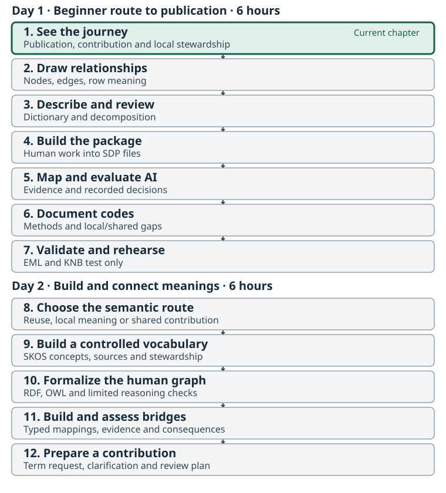
Two days, three connected outcomes
This workshop supports reusable data publication, contributions to shared terminology, and local vocabulary or ontology stewardship connected to shared meanings. Day 1 is a complete six-hour beginner route through publication; Day 2 adds six hours of semantic authoring and contribution work. This chapter also stands alone as a 55-minute overview. Its tour includes the purpose and artifacts of both days without requiring code or formal syntax.
The same graph and dictionary support all three outcomes. On Day 1 they make source meanings reviewable before software. On Day 2 we use them to decide which terms already exist, create small draft resources where useful, and connect local meanings to the Salmon Domain Ontology without erasing their differences. A catalog record helps people find the dataset; explicit concepts and relationships help them compare and interpret its meanings.
The Day 2 guide shows the next artifacts:
a SKOS controlled vocabulary, a small
OWL model, a bridge, and a term-request or clarification
draft. These classroom drafts do not create official shared terms.
Briefly preview the files in semantic-lab/ and return to
the source; detailed authoring starts in Chapter 8.
Start with the destination
Imagine finding a salmon dataset produced by another team. Can you tell what was estimated, which population and place it concerns, how the estimate was made, and whether it is suitable for your question? A download button alone cannot answer those questions.
The facilitator begins with the Fraser Coho teaching record, then opens the source CSV beside it. The reference page records the endpoint’s actual status and evidence. A draft or test record is a demonstration; it is not evidence that this workshop has a verified public deposit. If a verified endpoint is still pending, use the supplied local publication preview and say so explicitly.
This is a tour of the result, not a software exercise. Participants do not send data to metasalmon or AI in this chapter. We will first create our own diagram and dictionary, then review them with another person in Chapters 2–3.
What to look for in the record
Follow four questions rather than every catalog field:
- What is this? Find the title, scope, source and contact information.
- Can I use it? Find the access conditions, licence and important caveats.
- Can I understand it? Locate the table description, column definitions and method information.
- Can I trace it? Follow the source and version information back to the packaged table.
These are practical aims of FAIR: findable, accessible, interoperable and reusable data. Accessibility may involve stated conditions; FAIR does not mean that every dataset must be openly downloadable.
Meet our one shared example
Download and extract the Fraser Coho workshop kit.
Everyone follows the 173-row, 14-column NuSEDS Fraser Coho
2023–2024 slice in
raw_data/nuseds-fraser-coho-2023-2024.csv. Open a copy for
viewing in a spreadsheet, or follow the projected table. Keep the source
file unchanged.
The slice comes from Fisheries and Oceans Canada’s Fraser and BC Interior NuSEDS workbook. The kit preserves its source information, derivation and the current official DFO dictionary. That dictionary was retrieved on 8 September 2026 and may postdate the workbook used for this slice. It is a selected two-year teaching dataset, not the full NuSEDS database or a complete history of Fraser Coho.
The table contains 87 distinct POP_ID values and
164 distinct population–analysis-year pairs across 173
rows. Some pairs occur more than once. A row is therefore a
source record associated with a population, waterbody and analysis year;
population plus year is not a verified unique key.
Later we will examine what additional context distinguishes the records.
Do not delete repeated pairs or sum their estimates during the
workshop.
Six columns let us practice the main kinds of description:
| Source column | What we can see | Question that still needs evidence |
|---|---|---|
POP_ID |
A population identifier, such as 46200
|
What source unit does the identifier denote? |
WATERBODY |
A named waterbody, such as BONAPARTE RIVER
|
How does this named place relate to the population record? |
ANALYSIS_YR |
2023 or 2024: the year the estimate is
for |
Why can contributing surveys extend into the next calendar year? |
SPECIES |
Coho throughout this slice |
How is the source species label defined? |
NATURAL_ADULT_SPAWNERS |
Numerical estimates and 13 blanks | What does “natural” qualify, and what does a blank mean? |
ESTIMATE_METHOD |
Labels such as Area Under the Curve
|
How does the stated procedure affect interpretation? |
We will write descriptions for these six fields ourselves. The other eight fields remain in the table and must also be read and reviewed. A focused exercise is not permission to discard context.
Values and descriptions do different jobs
The first record associates population ID 46200,
BONAPARTE RIVER, analysis year 2023,
Coho, estimate 758 and method
Resistivity Counter. Those are data
values. Explaining what the identifier, estimate and method
mean is metadata: information that
helps someone interpret and reuse those values.
An identifier is a label used to refer to something. It is not the thing itself. Likewise, a waterbody, a biological population, a species category and a Conservation Unit describe different things. The table has no Conservation Unit field. We can discuss that wider context, but we cannot invent a CU assignment from these rows.
One compound name is enough to motivate the next chapters:
NATURAL_ADULT_SPAWNERS. A variable describes the question being
represented, while its property is
the characteristic of interest, such as abundance, and its entity is the thing the data concerns.
“Adult”, “natural”, the place, the year basis, the unit and the method
may add different kinds of meaning. We will separate them and record
uncertainty instead of treating the column name as a complete
definition.
The journey we will follow
| Chapter | Problem it addresses | What you leave with |
|---|---|---|
| 1. See the whole journey | A useful final result is hard to picture | A shared purpose and one reuse question |
| 2. Draw the dataset | Relationships and row meaning are implicit | A human-created node-and-edge diagram with evidence and questions |
| 3. Describe and decompose | Short column names hide assumptions | A dictionary, variable decomposition and peer-review record |
| 4. Build the package | Meaning and data can become separated | An SDP built from the same table and reviewed human descriptions |
| 5. Compare AI-assisted interpretation | Automated suggestions can seem more certain than their evidence | A comparison with the human baseline and documented decisions |
| 6. Review shared meanings | Similar labels may represent different concepts | Reviewed mappings, code meanings and unresolved term questions |
| 7. Validate and share | A valid file alone is not a reusable publication | A checked package and an honest publication handoff |
Diagram → dictionary and decomposition → human peer review → metasalmon → AI-assisted comparison. This order is part of the method. Your first explanation of the dataset must exist before tools propose one for you.
A few names you will hear later
A Salmon Data Package (SDP) keeps the table, data dictionary, code
definitions, dataset description and other context together.
metasalmon in R and metasalmonpy in Python
help create and inspect that package. We introduce their names here;
detailed commands belong in Chapter 4.
The workshop Glossary is a reading aid: it explains words used in these lessons. A controlled vocabulary is a maintained set of terms and definitions used to describe data consistently. Reading a glossary entry helps you understand the discussion; choosing a vocabulary term requires checking its maintained definition against your data.
An ontology also states relationships between concepts. An IRI is a stable identifier used to refer to a term. Later, we compare the meaning we have documented with candidate definitions in the Salmon Domain Ontology and other resources. Similar wording does not establish an exact match.
EML is a structured format for ecological metadata. Catalogs such as KNB, part of the DataONE network, use metadata to help people discover and assess data. We will return to the opening record in Chapter 7 and explain how the workshop’s artifacts support it.
Activity: Read the example as a future user
In pairs, inspect the source table and teaching record or local preview. Spend 10 minutes identifying one question you could answer from the table and one you could not answer safely.
Then write three short notes:
- The field or value that raises your question.
- The description, relationship or source evidence that would help.
- The workshop stage where you expect to resolve it.
Share one example. Keep unanswered questions for the diagram and dictionary exercises. An unresolved question is a useful result; an invented answer is not.
- The same 173-row, 14-column Fraser Coho slice carries every chapter.
- A reusable dataset needs understandable values, context, relationships, sources and access conditions.
- The dataset has 164 distinct population–year pairs; that pair does not uniquely identify every row.
- We draw and describe the dataset, then peer review our account, before using metasalmon or AI.
- A catalog preview, a draft record and a verified public deposit have different statuses.
Content from Draw the Dataset Before Using Tools
Last updated on 2026-09-08 | Edit this page
Overview
Questions
- What is a row about, and which things must remain distinct?
- How can a simple diagram make hidden relationships and assumptions visible?
- What should we record now so the diagram could support formal ontology work later?
Objectives
- Draw a node-and-edge model of the Fraser Coho table using plain-language relationships.
- Distinguish source records, population identifiers, waterbodies, species, years and estimates.
- Link diagram statements to source fields and mark unsupported relationships as questions.
- Save an editable diagram and text-based node/edge tables before using packaging or AI tools.
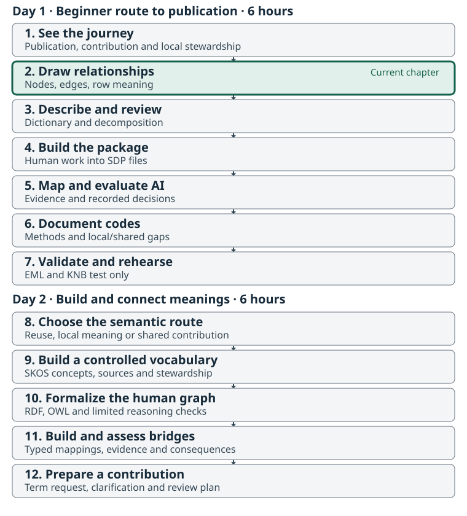
Start with people and the source table
Use the same raw_data/nuseds-fraser-coho-2023-2024.csv
from Chapter 1. This chapter uses paper, a whiteboard or an ordinary
drawing application, plus a spreadsheet or text editor. Do not
load the dataset into metasalmon or an AI service. First make
your own account of what the data is about.
Work inside the extracted kit:
fraser-coho-workshop/
raw_data/ source CSV and supplied source information
worksheets/ your diagram tables, dictionary and review record
reference/ draft worked examples and scientific-review questions
scripts/ used after the human review in Chapter 3
output/ used for later generated packagesThe worksheets are editable. Preserve the source files. If working on
paper, photograph or scan the finished diagram and keep it in
worksheets/; also complete the node/edge tables so the
relationships can be read without an image.
What a simple graph adds
A node names something relevant to the dataset. An edge states how one node relates to another. Write a short verb phrase on each arrow, such as “identifies”, “is reported for” or “has result”. An unlabelled line leaves its meaning to the next reader.
Give each node a local ID such as N1. These IDs connect
the diagram to the worksheet. They are not official NuSEDS identifiers
or newly minted ontology terms.
| Record | What to write |
|---|---|
| Node | Local ID, plain label, kind of thing, related source fields, evidence, status and any question |
| Edge | Start-node ID, relationship phrase, end-node ID, related source fields, evidence, status and any question |
The supplied node worksheet and edge worksheet provide these columns. Use “observed in file”, “working interpretation” or “question” to show the kind of support behind a statement.
Begin with row meaning
Row grain describes what one record represents and the context needed to distinguish it from others. Start your drawing with a source record, then add the things that the record identifies or describes.
The source has 173 rows but only 164 distinct
POP_ID–ANALYSIS_YR pairs. For example,
POP_ID 46170 has two records for
2023: NICOLA RIVER (DAM) and
NICOLA RIVER (DOT). Both have a blank adult-spawner
estimate and NO SURVEY THIS YEAR classification. Their
shared population/year values are not evidence that one row should be
removed.
Draw the distinction between:
- the identifier value in
POP_IDand the source population it identifies; - the waterbody name and the place it refers to;
- the species label and the population/organisms being described;
- the analysis-year value and the biological or reporting basis that gives that year meaning;
- an estimate result and the observation or estimation activity that produced it.
Do not assume every row represents exactly one field visit. The source’s method and survey-window fields may summarize work; the exact observation/estimation structure remains a question for source review.
Where does a Conservation Unit fit?
A Conservation Unit, a biological population, a species and a stream are not interchangeable levels of one simple hierarchy. The current NuSEDS catalog description describes populations by freshwater location and run timing, referenced to stream mouths; those populations can be grouped by CU. This table has no CU column or population-to-CU membership table. You may add a dashed “CU relationship to investigate” node beside your graph, but do not assign a CU, draw an asserted membership edge, or label the relationship “is a” without supporting evidence.
Use the same discipline for stream relationships. “This source record names this waterbody” is supported directly by the table. The current official dictionary describes the waterbody or portion that bounds the population on its source estimate document (SEN). “This population occurs only in this waterbody” is a stronger biological claim that the table alone does not establish.
Expand one estimate into meaningful parts
The Salmon Domain Ontology’s metamodel view provides a plain-language guide. It is an optional, non-normative orientation model; the shared ontology’s core modules hold its reusable definitions.
For NATURAL_ADULT_SPAWNERS, add nodes that help
distinguish:
| Part | Plain-language question |
|---|---|
| Entity | What population or group does the estimate concern? |
| Property | What characteristic is represented, such as abundance? |
| Variable | What complete data question is the column answering? |
| Observation or estimation activity | What work produced the result? |
| Result and unit | What value was reported, and in what units? |
| Method | How was the result determined? |
| Constraint and other context | Which qualifiers change the meaning or scope? |
Use 758 from the first source record as a labelled
example value, not as the definition of the variable.
Relate ESTIMATE_METHOD to the estimation activity. The
current official dictionary defines adults as mature fish excluding
jacks and the year as the year the estimate is for; surveys may extend
into the next calendar year. It does not establish a natural-origin
restriction. Keep that qualifier, applicability of current definitions
to the source workbook, and any additional biological year-basis claim
as review questions. The next chapter makes these distinctions explicit
in the dictionary.
Keep a route to later formalization
We are making a conceptual model, not writing OWL. Clear labels, typed nodes, directed relationships, evidence and uncertainty will help an ontology specialist formalize the model later. A local diagram does not approve new terms or prove equivalence with an existing term.
Keep broad kinds of things separate from examples. A box labelled
“waterbody” and an example BONAPARTE RIVER should not
silently become the same object. Record whether a node is a concept,
source record, identifier, example value or unresolved placeholder. The
typed distinction is more useful now than formal syntax.
Activity: Draw, explain and revise
- Draw for 15 minutes. Include the six focus fields, one source record, one example value and the entity/property/variable/activity/result distinction. Label every relationship.
- Explain for 10 minutes. Your partner traces one row through the drawing. Ask which arrows come directly from the file and which need a definition or other source.
-
Revise for 10 minutes. Correct ambiguous arrows,
mark questions, and enter the nodes and edges in
worksheets/dataset-nodes.csvandworksheets/dataset-edges.csv. Save the editable drawing or paper capture with them.
Use the draft
working diagram only after making your first drawing. It is a
comparison aid, not a scientifically approved answer key. Its node
and edge
tables expose the underlying statements;
reference/dataset-graph-working.md in the kit explains its
limits.
{kind=link}
Checkpoint: every arrow has a label; its endpoints exist in the node table; the source-record grain is stated; population, waterbody, species and CU are not collapsed; questions remain visible. Keep the diagram for the formal peer review in Chapter 3.
- Draw the dataset before packaging it or asking AI to interpret it.
- A useful graph makes relationships, row meaning, evidence and uncertainty explicit.
- Population, waterbody, species and Conservation Unit are distinct; this table does not supply a CU mapping.
- The observation activity, variable and result value need different nodes.
- An editable diagram plus text-based node/edge tables supports later reuse and formalization.
Content from Write the Dictionary, Decompose Meanings and Review Together
Last updated on 2026-09-08 | Edit this page
Overview
Questions
- What must a dictionary explain beyond column names and data types?
- How do we separate the parts of a compound measurement term?
- What evidence and peer review are needed before packaging or AI-assisted interpretation?
Objectives
- Write working definitions for six focus fields and review all 14 source columns.
- Decompose
NATURAL_ADULT_SPAWNERSinto distinct semantic roles without inventing unsupported qualifiers. - Reconcile the dictionary with the dataset graph and preserve source wording separately.
- Record an actual peer review, including unresolved questions, before moving to metasalmon or AI.
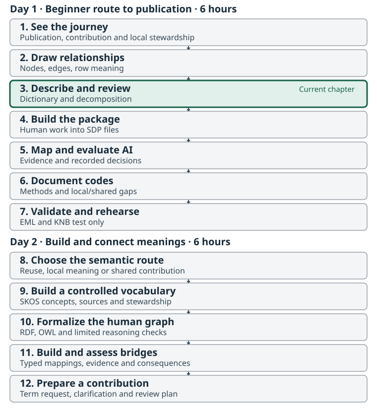
Turn the diagram into a usable explanation
Continue with the unchanged 173-row Fraser Coho table and your
Chapter 2 diagram. Open worksheets/data-dictionary.csv and
worksheets/variable-decomposition.csv from the kit in a
spreadsheet or text editor. This is still human interpretation
work: no metasalmon ingestion and no AI interpretation yet.
A data dictionary explains each field: what it means, how values are represented, which values or codes are allowed, what missing values may mean, and which sources support the explanation. It should help someone identify both appropriate uses and unresolved questions.
The dictionary
worksheet includes all 14 source fields. Six rows are marked for you
to write: POP_ID, WATERBODY,
ANALYSIS_YR, SPECIES,
NATURAL_ADULT_SPAWNERS and ESTIMATE_METHOD.
The other eight have draft working descriptions to read and amend. Keep
the original source description in its own column even when you question
it.
What to record
| Worksheet field | Purpose |
|---|---|
column_name, exercise_focus
|
Preserve the exact source name and identify the six writing exercises. |
source_description,
working_definition
|
Separate supplied wording from your own evidence-based account. |
field_role, value_format,
example_values
|
Explain the field’s job and representation. A number-shaped identifier is still an identifier. |
units, code_meanings
|
Record the measurement unit or N/A; retain exact category values and cite their definitions or explicit questions. The linked working code list gives source evidence and its limits. |
missingness, related_fields
|
Explain missing-value handling and the context needed to interpret a value. |
evidence, status,
open_question
|
Make support, review state and uncertainty visible. |
These are workshop interpretation fields. They are not a replacement schema for an SDP metadata CSV. Chapter 4 will show how reviewed descriptions map into the package’s own metadata fields, while the full worksheets remain supporting context.
Read the data and source together
Do not copy every statement from the supplied starter dictionary into your own definition. That dictionary is a starting point, not scientific approval. The kit also includes the official DFO dictionary and its retrieval record. It was retrieved on 8 September 2026 and may postdate the 2025 workbook used for this slice. Its current definitions support useful corrections to the starter. The scientific-review packet records the remaining questions that Brett will take to Bruno and Tom; its reviewer fields intentionally remain blank.
Keep these checks beside the six writing tasks:
| Field | Supported observation | Boundary to preserve |
|---|---|---|
POP_ID |
No blanks; 87 distinct IDs in this slice |
POP_ID plus year does not uniquely identify all 173
rows. Do not equate the source unit with a CU. |
WATERBODY |
Names include distinct Nicola River locations | A name in a record does not establish an exclusive population-to-stream relationship. |
ANALYSIS_YR |
Officially the year the estimate is for; surveys may continue into the next calendar year | Do not rename it brood year or equate it with every inspection date. |
SPECIES |
All rows say Coho
|
Preserve the source label; formal taxon mapping is a later review decision. |
NATURAL_ADULT_SPAWNERS |
13 blanks; some nonblank values have decimals | Preserve blanks and decimals. A source estimate is not necessarily an observed integer count. |
ESTIMATE_METHOD |
Nine distinct labels | Describe code meanings; do not assume all labels are interchangeable analytical procedures. |
The other fields supply population naming, area, run type, estimate
classification, estimate stage, survey-window dates and watershed code.
Correct AREA to NuSEDS subdistrict: the
official dictionary says subdistricts may differ from statistical areas,
particularly for Fraser streams. The starter’s PFMA wording should not
be copied as an accepted definition. For example, RUN_TYPE
contains 1, FALL and blanks, and
ESTIMATE_CLASSIFICATION includes
NO SURVEY THIS YEAR. That context can matter for an
estimate, but the classification alone does not explain every missing
value.
Decompose a compound variable
The Salmon Domain Ontology metamodel separates the thing being described, its characteristic, the complete variable, the activity, its result and its context. This optional teaching view is aligned with the ontology’s core; it is not a requirement to turn every phrase into an OWL class.
Use the decomposition
worksheet to unpack NATURAL_ADULT_SPAWNERS:
| Part | Working interpretation or question |
|---|---|
| Variable | The reported estimate of mature spawners excluding jacks; the field’s exact “natural” scope needs confirmation. |
| Entity | The population/group represented by the source record; the precise biological unit needs review. |
| Property | Abundance: the characteristic being represented. |
| Result value | A reported numerical estimate, such as 758; preserve
decimals and missing values. |
| Unit | Individuals is the supplied dictionary’s unit; retain that source and seek confirmation of the estimate’s interpretation. |
| Context or constraints | Coho in this slice; the current official adult definition excludes jacks. A natural-origin restriction is not established. Row-varying place and year are recorded separately. |
| Statistical modifier | Record only what the source establishes. Do not infer “count”, “total” or “mean” simply from the presence of a number. |
| Method | Refer to the row’s ESTIMATE_METHOD; its meaning belongs
with the procedure that produced the result. |
| Observation context and dimensions | Source population, waterbody, analysis year, survey-window dates, estimate classification and any other demonstrated context. |
The starter dictionary says “natural-origin adult spawners”; the current official DFO definition describes maturity and excludes jacks, without establishing natural origin. Our worksheet retains the starter phrase as source wording requiring review, alongside the more cautious working definition. It must not become an accepted natural-origin constraint merely because software finds a matching term. Likewise, a year value varies between rows; it is not a fixed constraint on the entire measurement column. The official definition identifies the estimate year; a claim that it is a brood year or another biological-year basis requires further evidence.
The ontology’s composition rules keep reusable abundance, unit, procedure, qualifiers and dimensions distinct. Your dictionary should do the same in plain language. Specific ontology identifiers and mapping strengths come later.
Peer review is the handoff to tools
Exchange the diagram, node/edge tables, dictionary and decomposition with another person. A peer review checks whether the explanation is understandable, internally consistent and honest about evidence. It does not grant scientific publication approval or settle questions beyond the available sources.
Use worksheets/peer-review.md to record the actual
reviewer, review date, observations, revisions and unresolved questions.
The supplied form starts with Completion: pending and a
blank reviewer. After the reviewer has checked the artifacts and
required revisions are complete, record their name and date (as
YYYY-MM-DD) and change that marker to
Completion: complete. Leave unresolved scientific questions
visible with a next step; never fill in a review that did not
happen.
An open scientific question can travel into a draft package as an open question. A missing human explanation or an undocumented peer review cannot be replaced by asking AI to supply one. Chapter 4’s build checks the review marker; the human review itself is what gives the marker meaning.
Activity: Write, reconcile and peer review
- Write for 20 minutes. Complete the six focus dictionary rows and the adult-spawner decomposition. Read all eight remaining rows and flag anything unclear. Check the units and code meanings against their cited sources; record questions where a definition is missing. Use examples from the unchanged source table.
- Review for 15 minutes. Your partner traces a source row through the graph and dictionary. Check the six focus fields, the other eight descriptions, blank handling, decimal estimates, the non-unique population/year pair, the unsupported natural-origin restriction, the supported estimate-year definition and any further year-basis claims.
- Revise for 10 minutes. Reconcile conflicting labels or relationships and record what changed. Complete the peer-review record only when the described review has actually occurred.
Compare your results with the draft dictionary and draft decomposition after your first attempt. They show a cautious working interpretation; they do not carry Bruno’s or Tom’s approval.
Ready for Chapter 4: the diagram and node/edge tables agree; all 14 dictionary fields have been read; the six writing tasks and one decomposition are complete; a real reviewer and date are recorded; unresolved questions remain explicit. Keep these human-created artifacts as the baseline against which you will later compare software and AI suggestions.
- Preserve source descriptions separately from your working interpretation.
- A dictionary explains value meaning, context, representation, missingness and evidence.
- Decomposition separates entity, property, variable, activity, result, unit, method and qualifiers.
- Use the current source definitions for estimate year, adults excluding jacks and subdistrict; retain the unsupported natural-origin restriction as a question.
- Complete a real human peer review before metasalmon or AI ingestion; save the baseline for later comparison.
Content from Build the Package from Your Human Description
Last updated on 2026-09-08 | Edit this page
Overview
Questions
- How does our diagram and dictionary become a Salmon Data Package?
- Which facts can software infer, and which decisions must we supply?
- How can we rebuild a draft without losing our review work?
Objectives
- Confirm the human diagram, dictionary, and peer review are complete before using packaging tools.
- Build or inspect an SDP containing the same 173-row, 14-column Fraser Coho source.
- Trace a human-written description into its canonical metadata field.
- Distinguish draft validation from scientific review and publication readiness.
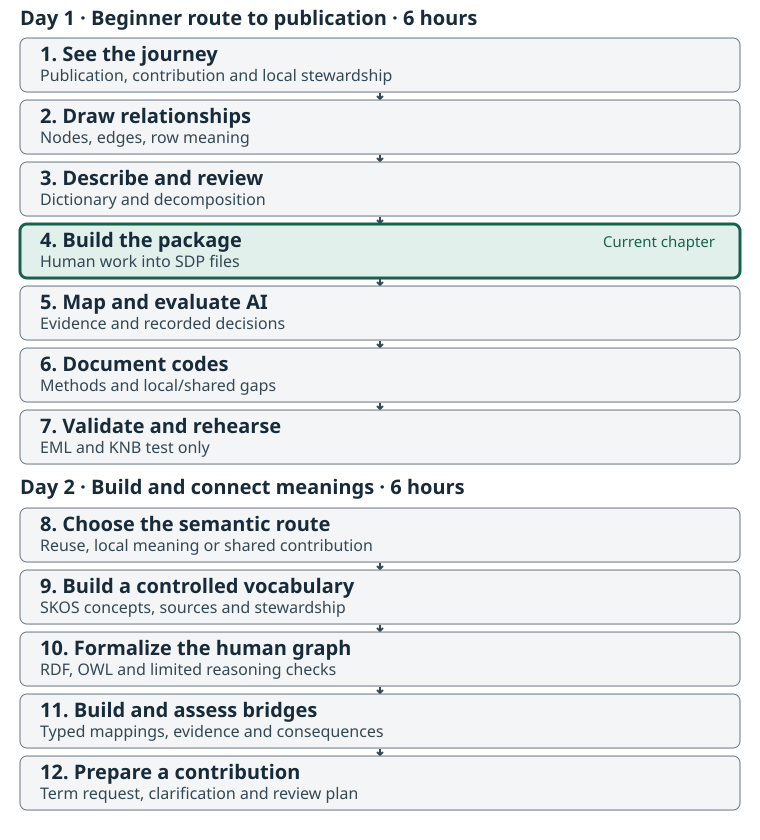
The problem: useful descriptions need to travel with the data
Your diagram explains the relationships. Your dictionary explains the columns. A Salmon Data Package organizes data and standardized metadata for another person and their software to inspect. This chapter transfers selected human descriptions into that structure while retaining the richer diagram and reasoning in the workshop project.
Before opening metasalmon or supplying anything to
AI, complete worksheets/dataset-nodes.csv,
worksheets/dataset-edges.csv,
worksheets/data-dictionary.csv, and
worksheets/variable-decomposition.csv. Record the actual
peer reviewer, date, decision, and remaining questions in
worksheets/peer-review.md. Revisit any relationship or
definition the reviewer cannot explain. A question may remain explicitly
unresolved; a guess must not become an asserted fact.
The facilitator’s reference/*-working.csv files are
comparison drafts. Copying them does not constitute peer review. Keep
your own decisions and their evidence visible.
Open the common workshop project
Download and extract the workshop kit, as described in
Setup. Work from its
fraser-coho-workshop/ directory. Keep the source file
unchanged throughout:
fraser-coho-workshop/
raw_data/nuseds-fraser-coho-2023-2024.csv
worksheets/ # your diagram, dictionary, and peer review
reference/ # facilitator comparison drafts and source notes
scripts/build_sdp.R # or build_sdp.py
checkpoints/ # supplied, labelled comparison stages
output/fraser-coho-workshop-sdp/The early column view was a way to focus attention. The package still
contains all 173 rows and 14 columns, with dataset ID
fraser-coho-workshop and table ID escapement.
POP_ID plus ANALYSIS_YR is not guaranteed to
identify one row: the source includes repeated population-year
combinations, including different waterbody records. Preserve those
distinctions.
Generate or inspect the draft
The kit build script checks the peer-review record before reading the
data into the packaging workflow. It starts with semantic seeding and AI
disabled, imports each column’s working_definition, and
refuses to overwrite an existing output. Read its comments so you can
trace the inputs and outputs.
Compare the supplied technical bindings with your human worksheet before building. Roles, value types, and the individual-count unit are supplied choices in the helper script; they are not automatically translated from your diagram or decomposition. Record any mismatch or open question. If a binding needs changing, review and edit the script before building. The source definitions and human reasoning remain your baseline for evaluating these choices.
Follow one description into the package
The field reference explains each metadata column and its allowed values. Use it while editing; you do not need to memorize the entire format.
| Human preparation | Package destination | What to check |
|---|---|---|
| Dataset purpose, source, and caveats |
metadata/dataset.csv and accompanying notes |
Credit the source and distinguish the teaching derivative. |
| What one row represents | metadata/tables.csv |
State the row meaning; do not declare a key without checking it. |
| Exact column name and working definition | metadata/column_dictionary.csv |
Definitions are imported by exact source column name. Compare the supplied role, type, and unit bindings with the worksheet before building. |
| Meaning of a stored category | metadata/codes.csv |
Preserve the stored value and describe its scope. |
| Human graph, decomposition, evidence, and questions | Working worksheets and reference notes in the project | Retain these for the later mapping review; the build copies only the
peer-review record into the SDP as
preparation-review.md. |
Software can suggest that NATURAL_ADULT_SPAWNERS holds
numeric values. The official NuSEDS dictionary describes mature salmon
excluding jacks; it does not establish a natural-origin restriction. The
header alone cannot resolve that distinction. Your source-based
definition and unresolved question must survive the build. The
dictionary’s measurement IRI fields are filled in Chapter 5 only when
their meanings are supported.
Do not append worksheet-only columns to the canonical metadata CSVs.
Methods that vary by row remain associated with the
ESTIMATE_METHOD code column; the SDP dictionary has no
general-purpose method_iri column.
Check the structure and keep the draft honest
Run the prepared validation script for your lane, or inspect the facilitator’s validation result:
Passing draft validation means that the tested structural rules pass. It does not approve a biological interpretation, establish a licence, or make the draft publication-ready. Checkpoint labels describe their actual stage: a technical reference remains a draft until its scientific review is recorded.
Activity: trace and explain one field
Work in pairs for 20 minutes:
- Confirm the graph, dictionary, and peer-review record were completed before this build.
- Build or open the draft, then find one definition you wrote in Chapter 3.
- Check that the package contains the full source table and keeps blanks distinct from recorded zeroes.
- Explain one validation message and one scientific question validation cannot answer.
- Save your evidence and current draft. If you need to rebuild, preserve this output and deliberately choose a new versioned destination; do not overwrite another person’s edits.
Your output is a traceable draft package, with its human preparation intact.
- Human diagramming, dictionary work, and peer review precede packaging tools and AI.
- The same full Fraser Coho source is used in every chapter.
- Canonical metadata fields have defined roles; the working worksheets preserve richer reasoning.
- A structural validation result is evidence about structure, not scientific approval.
Content from Map Meanings and Compare AI Suggestions
Last updated on 2026-09-08 | Edit this page
Overview
Questions
- Does a suggested term express the meaning we established by hand?
- How do we distinguish a complete variable from its components?
- How can AI help us review without becoming the source of truth?
- Where do we record an acceptance, rejection, or unresolved question?
Objectives
- Compare suggested mappings with the human graph, dictionary, and source evidence.
- Review one measurement variable and its components without inventing missing meaning.
- Record a mapping decision and rationale that another reviewer can trace.
- Compare saved AI outputs as a common activity, with optional free-only live assessment.
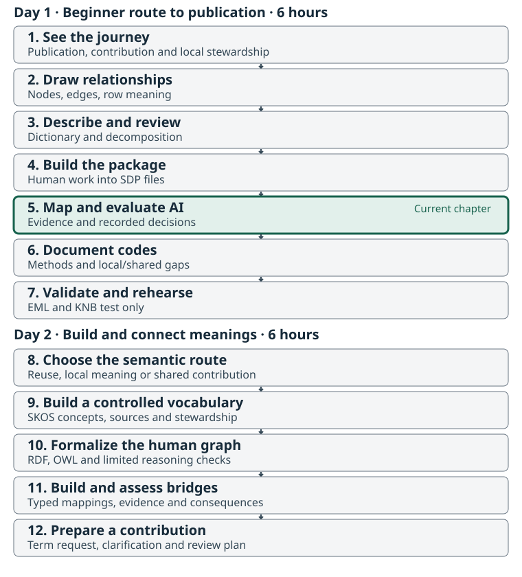
The problem: the same label can describe different things
A controlled vocabulary gives a definition a reusable IRI. Linking to that identifier helps another system interpret our data. A convincing label alone does not establish that the definition fits.
Keep your human graph, dictionary, decomposition, and
worksheets/peer-review.md beside the package. They are the
reference for this review. The same full 173-row,
14-column source remains in
output/fraser-coho-workshop-sdp, with dataset ID
fraser-coho-workshop and table ID
escapement.
Begin with NATURAL_ADULT_SPAWNERS. The official NuSEDS
dictionary describes mature salmon excluding jacks; it does not confirm
that the values are restricted to natural-origin fish. The header does
not settle that distinction. Do not turn it into a natural-origin
constraint because an AI response or a nearby term suggests that
reading. Return to raw_data/official-nuseds-dictionary.csv
and the source notes, including the retrieval date, and retain the
question if they do not resolve it. The current dictionary may postdate
the workbook used to derive this teaching file.
Translate the human decomposition into mapping questions
A variable describes what is measured; a result is a recorded value. Keep the variable, observation context, and result distinct in your graph and dictionary.
| Review question | SDP destination | Source of the answer |
|---|---|---|
| What complete variable does this column represent? |
column_dictionary.csv: term_iri
|
Your supported variable definition. |
| What property is measured? | property_iri |
The decomposed characteristic, separate from the whole variable. |
| What entity is it about? | entity_iri |
The object of interest established in the human model. |
| What supported qualifier narrows the meaning? | constraint_iri |
Evidence for that qualifier; leave unresolved if uncertain. |
| In what unit is the result expressed? | unit_iri |
The unit definition and applicability to these estimates. |
| Does aggregation belong to the variable definition? | statistical_modifier_iri |
Evidence for a total, mean, peak, or other modifier. |
| What thing are these records about? |
tables.csv: observation_unit_iri
|
The object of observation; describe record context and row meaning separately. |
The field reference
explains which fields are conditional. A numeric identifier such as
POP_ID is not a measurement merely because its stored
values contain digits. Do not use measurement decomposition slots as
generic graph relationships for identifiers or names.
Methods belong where they apply: a table-level procedure when
constant, a protocol citation when supported, or a coded field when the
method varies among rows. Chapter 6 examines
ESTIMATE_METHOD.
Inspect saved candidates before deciding
The kit’s checkpoints/seeded-sdp/ contains saved
candidate evidence for the same source and IDs. Read its stage notes
before use. Candidates are drafts, and their retrieval date and package
version matter. A saved shortlist lets the group review the same
evidence even if a live vocabulary service changes.
Retrieval is separate from AI assessment. A retrieval score is a ranking signal, not a calibrated probability that the mapping is right. A single returned candidate can have rank 1 simply because no alternative was returned.
An empty queue is not a completed package. The queue contains returned suggestions; it does not prove that every necessary target was found, every definition was reviewed, or all publication facts are present.
Everyone compares the saved AI assessment
AI can point out missing context or propose a decomposition. The human artifacts come first so you can test those proposals against an independent interpretation instead of accepting fluent text as evidence.
Open ai/README.md in the kit and use the recorded
outputs it identifies. Read the input context, provider/model identity,
run date, and success or failure status. Compare actual saved responses;
do not treat an example prompt, a failed request, or a facilitator’s
hypothetical response as a completed model run. If a saved response is
unavailable, record that limitation and perform the source-and-candidate
review with the material that is present.
The common recording is ai/recorded-assessment.md,
produced by the Codex authoring assistant and preserved as such.
ai/recorded-suggestions.csv gives its individually numbered
propositions, and ai/comparison-worksheet.csv leaves your
human decisions blank. This is an actual authoring-assistant response,
not a successful OpenRouter run or native
semantic_llm_assessments output. Keep those origins
distinct when comparing a later live result.
Choose from the recorded propositions about natural origin (AI02), activity and result (AI04), year basis (AI05), method (AI07), missingness (AI08), and repeated population-year pairs (AI10). For the common comparison, each pair answers:
- Which parts agree with the human graph and dictionary, and on what evidence?
- Did the response confuse a variable with a result, an entity with an identifier, or a method with a property?
- Did it assign a meaning to “natural,” a blank, or
RUN_TYPE = 1that the sources do not establish? - Which suggestion would you retain, revise, reject, or leave unresolved?
Record the model’s suggestion separately from the final human decision. Agreement among models is not source confirmation.
Optional: run a free live assessment
Recheck that your diagram, dictionary, decomposition, and peer review
are complete before a live call. Read the payload and the provider
information in ai/README.md; only use the approved public
teaching material. A live AI request sends that context to the
provider.
The kit’s optional scripts use the fixed
openrouter/free route and do not fall back
to a paid model. Free availability and rate limits can change. If no
suitable free route is available or the request fails, use the saved
comparison activity and keep the failure visible.
Keep API keys out of worksheets, scripts, saved outputs, and screenshots. The response is review evidence; it is not an instruction to modify the package automatically.
Activity: make one defensible mapping decision
Use 20 minutes to compare the human decomposition with saved vocabulary candidates, and 20 minutes to compare the saved AI assessment and discuss it with a partner. A live call is an optional variation within that time.
Produce a record containing the target column and role, proposed interpretation, evidence, candidate IRI when available, decision, reason, reviewer, and remaining question. Include one rejected or unresolved claim when the sources do not warrant it. Revisit the graph if the review exposes an unsupported relationship.
The useful output is a justified decision, not a filled cell count.
- The human model and source evidence are the basis for reviewing suggestions.
- A complete variable, its components, observation context, and result are distinct.
- Saved AI output is a common comparison activity; live AI remains optional and free-only.
- Keep the candidate, human decision, and rationale together, including unresolved questions.
Content from Explain Code Values and Route Unresolved Meanings
Last updated on 2026-09-09 | Edit this page
Overview
Questions
- What does each stored code mean in this source?
- When should a definition stay local, reuse a shared term, or become a term request?
- What should we do when the source does not settle the meaning?
Objectives
- Document a method value without changing the source code.
- Distinguish an actual procedure from a reporting label or missing-information state.
- Draft one evidence-based route for an unresolved meaning.

The problem: readable codes can still hide important distinctions
The same Fraser Coho package contains ESTIMATE_METHOD,
ESTIMATE_CLASSIFICATION, ESTIMATE_STAGE, and
RUN_TYPE. These columns answer different questions. A code list records the
exact stored values and what each one means in context. The code-field reference
explains the canonical metadata/codes.csv fields.
Return to your graph and human dictionary before assigning a shared definition. In particular, a method label does not establish whether an estimate is absolute or relative, and a numeric-looking run-type code does not establish a biological definition.
Inspect the method values in the unchanged source
ESTIMATE_METHOD varies by row, so its procedure
information belongs with those coded values. It must not be promoted to
one table-wide method merely because a single method is common.
| Stored value | Rows in the 173-row source | Review question |
|---|---|---|
Area Under the Curve |
84 | Which documented procedure does this label denote? |
Peak Live * Expansion |
39 | What is expanded, and under what assumptions? |
Not Applicable |
27 | Why is no method applicable in this record? |
Combined Methods |
12 | Which methods were combined, and where is that context recorded? |
Resistivity Counter |
4 | What procedure does the counter support? |
Sonar-ARIS |
4 | Does the source describe a method, an instrument, or both? |
Sonar-DIDSON |
1 | What procedure and instrument context are available? |
Fixed Site Census |
1 | What is counted and how? |
Fence |
1 | What operational definition accompanies this label? |
These are sample counts, not claims about all NuSEDS records.
Not Applicable is not automatically a procedure.
Combined Methods needs context that a generic label may not
supply.
Every observed non-empty value in a categorical column needs a
matching code row. A vocabulary_iri alone does not explain
undocumented values. Do not replace a source value with a prettier label
and lose the link back to the data.
Decide where a meaning belongs
An ontology can express concepts and their relationships; an organization also needs authority to maintain its own definitions. Sharing a word does not mean sharing its exact meaning.
| Finding | Next action |
|---|---|
| An existing shared definition fits the supported local meaning | Reuse its IRI and record the evidence. |
| A well-supported concept could be reused across organizations | Draft a request for the Salmon Domain Ontology or the appropriate shared vocabulary. |
| The definition depends on DFO policy or NuSEDS operations | Keep the local definition explicit and consider the DFO-specific resource or a local profile. |
| The source evidence is insufficient | Retain an unresolved question and identify the person or document that could answer it. |
A POP_ID is a source-system identifier, not
automatically the name of a new domain class. A label containing
“natural” is not enough evidence to mint a natural-origin concept.
Broadly useful concepts and locally governed definitions can be
connected later with a documented mapping whose strength matches the
evidence.
The packages provide detect_semantic_term_gaps() and
render_ontology_term_request() to prepare candidate
requests. Their suggested route is review evidence, not a governance
decision. A saved suggestion CSV cannot prove that every zero-candidate
target or later human rejection was included, so check it against your
own unresolved-question log. Rendering a request does not submit it.
Draft one useful request or source question
Keep the draft in your workshop notes. Include the source column or code, the supported meaning, examples from this dataset, evidence, nearby terms that do not fit, the proposed route, and the unresolved question or requested change. Refer back to the relevant graph node or edge and dictionary row.
The workshop does not post requests automatically. A maintainer can review a draft at the Salmon Domain Ontology request page or the DFO Salmon Ontology request page when a request is warranted. This short Day 1 decision prepares Day 2: Chapter 8 compares representation and stewardship choices, Chapter 9 builds a SKOS vocabulary, Chapters 10–11 develop a model and bridge, and Chapter 12 prepares a complete request or clarification draft.
Activity: explain one method and one unresolved meaning
In 15 minutes, choose one method value and check its source definition with a partner. Record the exact code, its interpretation, and the evidence. Then choose one unresolved question from your graph, dictionary, or mapping review and draft its next action.
Success is a code explanation that preserves the source meaning and a route another person can assess. An honest request for source clarification is a useful outcome.
- A readable source label still needs context and evidence.
- Row-varying methods remain linked to their code values.
- Reuse, shared contribution, local definition, and unresolved source questions are different outcomes.
- Term requests are drafts for human stewardship decisions.
Content from Validate, Inspect the Test Record, and Explain Publication
Last updated on 2026-09-09 | Edit this page
Overview
Questions
- What distinguishes a good finished package from a structurally valid draft?
- How does an SDP become EML and a catalog record?
- What can a test deposit demonstrate, and what would production publication add?
Objectives
- Trace source data, human interpretation, reviewed metadata, EML, and catalog objects.
- Interpret strict validation without confusing it with scientific approval.
- Inspect the clearly labelled KNB test teaching record or its supplied local artifacts.
- Explain production publication steps without executing a production deposit.
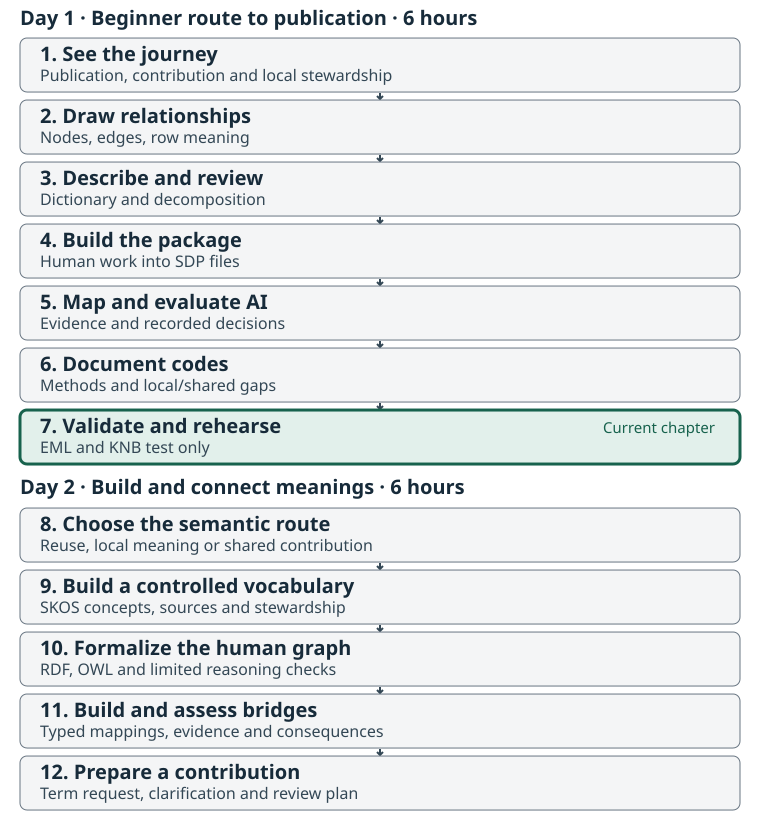
The problem: a reusable package needs both meaning and a reliable access path
At the start of the workshop you saw the destination. Now follow the evidence that connects it to the source: unchanged rows, a human diagram, definitions and decomposition, recorded mapping decisions, code meanings, and a package another person can interpret.
A good finished product is more than a set of non-empty cells. Its context supports its claims, unresolved questions are visible, files agree, and the intended reader can find and use it. The reference page identifies the current teaching record and its verification status.
Our catalog exercise uses the KNB Test Node, with the same 173-row, 14-column Fraser Coho source. The official source remains on Open Canada. We do not create another production publication of it in this workshop.
Check what is ready and what still needs work
The classroom draft is output/fraser-coho-workshop-sdp.
Preserve it, its worksheets, and the actual review decisions. The kit’s
checkpoints/reference-sdp/ is a facilitator comparison
artifact; read its stage and review notes before describing it as
reviewed. A technical validation result does not substitute for a named
human scientific review.
Use these questions to assess the package:
| Check | Evidence to inspect |
|---|---|
| Is this still the same source? | All 173 rows, 14 columns, and values; source checksum and derivation record. |
| Can another person explain the rows and columns? | Human graph, dictionary, decomposition, and recorded peer review. |
| Are measurement mappings supported? | Source definitions, chosen terms, rejected suggestions, and remaining questions. |
| Are code values described? | Code coverage plus source-based definitions and method context. |
| Are descriptive and publication facts defensible? | Attribution, contacts, source licence, temporal coverage, provenance, and intended access. |
| Do files agree technically? | Validation results, descriptor consistency, checksums, and the EML schema result. |
The source has 13 blank spawner estimates and 14 recorded
zeroes. These are different observations about the file. Do not
convert blanks to zero or infer that Not Applicable has one
universal relationship to a missing estimate.
Run the strict package check
If your draft cannot pass, retain the report and its unresolved questions. You can still trace the rest of the process using the supplied same-source reference artifacts. Clearly distinguish a step you executed from a result you inspected.
The reference passes the pinned MetaSalmon strict package check and
EML validation, but the separate smn-data-pkg validator
rejects the semantic keys projected into its descriptor. This is known
item #90 in the MetaSalmon backlog; it is not a reported pass of every
validator. The kit contains an
unposted
issue draft and exact reproducer. Keep that result separate from
scientific review and the teaching-record status.
Follow the package into EML
EML, Ecological Metadata Language, expresses discovery and data-description metadata in a standard XML structure. It is a downstream representation of the package, not a replacement for the human preparation or canonical SDP metadata.
The exporter needs facts that cannot be recovered from column names
alone: structured parties, rights, methods, measurement scales,
missing-value meanings, and source context. The reviewed
metadata/eml-mapping.yml sidecar supplies such facts. This
is where details deferred from Chapter 1—numeric versus nominal domains,
date domains, and EML field requirements—become useful.
Inspect metadata/eml-mapping.yml and any supplied
publication/test/eml.xml in the reference checkpoint. Trace
one source-column definition into the EML attribute description. Then
find the source citation, teaching-record label, and test-environment
URLs. Use the canonical SDP-to-EML
workflow and mapping
template for the full requirements.
The pinned R and Python exporters also require checksum-bound semantic evidence and accepted-selection files. The R package validates this closure but does not provide a general public function that produces every required file. The supplied reference build must document how those artifacts were made and what was actually reviewed. Do not fabricate a reviewer, licence, checksum, missing-value explanation, or accepted decision to satisfy the exporter. This limitation can be retired when the pinned release supplies and verifies the complete producer workflow.
Preview a test deposit
A dry run plans the identifiers, files, checksums, access policy, and
relationships without credentials or network calls. The workshop scripts
explicitly target knb_environment = "test" and use the
expanded representation so the metadata files remain individually
inspectable.
Run this only when the package has the required export facts, or
inspect the supplied reference plan. The script requires an explicit
package copy beneath output/ and refuses checkpoint paths.
For practice, copy the reference checkpoint to a new destination;
preserve the supplied checkpoint and its stage notes. This copy does not
make its scientific review complete.
Test output belongs under publication/test/. A test
deposit uses urn:node:mnTestKNB at
https://dev.nceas.ucsb.edu/, with DataONE staging services.
The test route requests no preservation replicas, cannot receive a DOI
through this workflow, and is not a durable production record. Test
objects are not promoted to production.
Inspect the teaching record
Open the teaching-record link and status. It is explicitly labelled “Workshop demonstration — KNB Test Node” and links to the official source. Check the current access and verification note before the activity.
For a verified public test record, each learner should be able to open it without signing in, read the metadata, and download the intended example files. Follow a description from the source and human dictionary into the displayed catalog metadata. Inspect the separate package components and their relationships.
If the reference page says the deposit is pending, private,
unavailable, or not yet verified, use the supplied local artifacts and
screenshots and report exactly that status.
published_pending_catalog means object storage has
progressed but the required catalog evidence is incomplete. It is not a
completed catalog demonstration, and recreating identifiers does not fix
the indexing question.
Test services can change or remove records. The downloadable kit remains the common classroom reference and makes the example inspectable when the test service is unavailable.
Explain the production steps without executing them
A production publication needs its own source-rights decision, final metadata review, repository choice, intended access, and responsible depositor. It also needs a fresh production plan and production identifiers. A test record is never a shortcut around these decisions.
For an appropriate future dataset, the sequence is:
- Confirm source rights, attribution, intended reuse, and whether another production deposit is warranted.
- Complete human scientific review, package validation, and EML validation.
- Review a fresh plan for the named production repository and intended access.
- Have the authorized depositor make the production deposit with the correct authenticated identity.
- Verify object integrity, access, catalog indexing, and the user-facing record.
- Follow the repository’s public-release and DOI process when applicable, and preserve the record for later versioning.
These are explanatory steps in this workshop. The learner scripts contain no live upload or production-deposit action. The source’s existing Open Canada record remains the authoritative source publication.
For a later metadata revision, preserve the previous package and manifest, build a new version in a separate directory, document the change, and review its new plan. Published object bytes and identities are not edited in place.
Finish Day 1 and carry the model into Day 2
This completes the six-hour beginner route. Keep the human graph, dictionary, review decisions, and unresolved questions. In Day 2, the same evidence supports a small controlled vocabulary, an OWL model, explicit bridges, and a contribution draft. A working catalog link is not required to study those meanings; keep its actual publication status separate. Begin with Chapter 8 when ready.
Activity: tell the full story of one estimate
In 20 minutes, trace one NATURAL_ADULT_SPAWNERS record
through the source, human dictionary, diagram, mapping decision, EML,
and catalog or supplied local representation. Explain its
population/year context and method, preserving any source
uncertainty.
Finish by identifying one requirement that a production publication would add and one claim that technical validation alone cannot justify. Mark each step as executed, inspected, or not yet available in your notes.
- A good finished package combines supported meaning, traceable evidence, and usable access.
- Strict validation and schema-valid EML do not establish human scientific approval.
- The classroom destination is a clearly labelled test demonstration of the same NuSEDS source.
- Production publication is explained, separately authorized, and not executed here.
Content from Choose What to Reuse, Define Locally, or Propose Together
Last updated on 2026-09-09 | Edit this page
Overview
Questions
- Does this problem need a shared term, a local definition, a data check, or a source question?
- When should a meaning be represented with SKOS or OWL?
- What evidence would justify a contribution to the Salmon Domain Ontology?
Objectives
- Separate the source of a definition from the scope of its meaning and its steward.
- Choose a representation for seven questions from the Fraser Coho dataset.
- Document reuse, local/profile and shared-contribution decisions without inventing missing meanings.
- Explain why a source code, a SKOS concept and an OWL class have different roles.
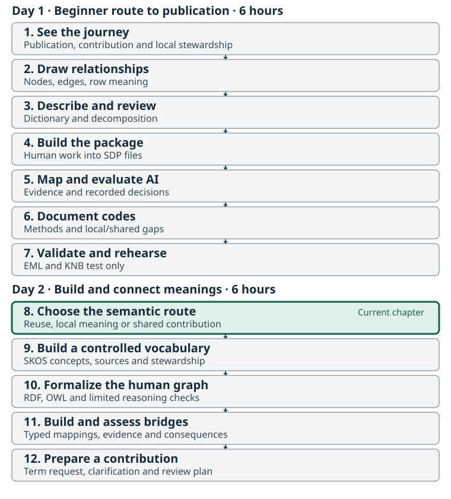
Start with the human work already completed
Day 1 followed all 173 rows and 14 columns of the Fraser Coho NuSEDS slice through interpretation, packaging and review. Day 2 develops small vocabulary, model and bridge artifacts from those same records. Keep the completed graph, dictionary, decomposition and actual peer-review record beside you. A supplied example does not replace that baseline.
Open semantic-lab/worksheets/routing-decisions.csv in
the extracted kit. Its seven cases refer to real source fields or to
components of your existing graph. You will choose an action and record
why. The raw data, dataset ID fraser-coho-workshop and
table ID escapement remain unchanged.
The purpose of a new term is to solve a demonstrated communication or integration problem. Finding a plausible name is only the beginning. A missing definition, a failed lookup and a missing ontology concept are different findings.
Ask five questions before choosing a home
- What is the intended use? Explain a stored category, annotate a measurement, express a relationship, or check data values?
- What does the source establish? Compare the actual rows, dictionary and method documentation. Separate a definition from an inference.
- What already exists? Check a candidate’s definition, type and scope before proposing another identifier. Keep the search source and version.
- How broadly does the meaning hold? A DFO document can describe a broadly shared scientific concept; its publisher alone does not decide the concept’s home.
- Who can maintain and approve it? A team can prepare a draft while the appropriate scientific or vocabulary steward retains the adoption decision.
The Salmon Domain Ontology conventions at the inspected commit distinguish shared OWL, a small shared SKOS layer, organization/profile resources and separate bridges. Their default is local/profile when reuse is uncertain; shared promotion needs stable, policy-neutral meaning and cross-organization reuse. A local resource can still be carefully governed and machine-readable.
Choose the representation that answers the question
| Need | Representation | Fraser Coho example |
|---|---|---|
| Explain categories with labels, definitions and scope | SKOS concepts in a scheme | The ESTIMATE_METHOD category
Area Under the Curve
|
| State formal relationships among types of things or describe individuals using those types | An OWL model with RDF assertions | Separate an estimation activity, its reported result and the population it concerns |
| Check the form or completeness of stored data | A schema or explicit data check | Date representation; whether a proposed population/year key is unique |
| Resolve insufficient or conflicting evidence | A source question with a next step | Whether “natural” establishes a natural-origin restriction |
| Express a complete measurement variable | A local/profile variable description with decomposed components | Adult-spawner estimate, abundance property, unit, qualifiers and row context |
SKOS organizes concepts and their documentation; OWL supports formal classes, properties and logical statements. Neither a vocabulary label nor an OWL axiom makes a table pass a completeness check. These tools can work together, but the choice starts with the intended use. See the W3C SKOS Primer and OWL 2 overview.
Consider three distinct things:
-
Area Under the Curvein a CSV cell is a stored string. - A workshop SKOS concept documents the meaning of that category with its own identifier.
- An OWL class describes a type of thing in a formal model. An individual activity may be described using a class and linked to a procedure.
Do not turn each code into an OWL class merely because it has an IRI.
Under the SDO conventions, a SKOS concept and an OWL class use separate
IRIs. A method concept may also be typed as an instance of
sosa:Procedure when supported; that is different from
declaring the same IRI an owl:Class. Chapters 9–10 make the
distinction concrete.
Choose the scope and the next action
| Finding | Action now | Evidence that could change the decision |
|---|---|---|
| An existing term fits the supported meaning | Reuse it and retain the local source binding | A mismatch in definition, inclusions, grain or use |
| A local category has a source-backed definition | Document it in a local/profile draft; check maintained resources before production reuse | Demonstrated equivalent meaning and use by other organizations |
| A stable concept is missing and multiple organizations need it | Prepare a shared-term proposal with examples and a search record | Steward review confirms scope, representation and duplication checks |
| Meaning depends on a program or operational rule | Keep that scope explicit and route to the appropriate program/profile steward | Evidence that the meaning is policy-neutral and shared |
| The source does not establish the meaning | Ask a source question and keep the uncertainty visible | A dated definition or method source answers it |
For this dataset, the abundance property already has the shared
anchor https://w3id.org/smn/Abundance. The pinned
definition concerns a reusable characteristic. Reusing it does not
resolve the complete adult-spawner variable, authorize aggregation, or
establish natural origin.
The current SDO conventions keep estimate-method and estimate-type
schemes in the profile layer. Chapter 9 therefore builds a
teaching draft of selected source categories, without
claiming that NuSEDS needs a new official vocabulary. All newly
introduced example identifiers begin
https://example.org/fraser-coho-workshop/terms/. They
identify classroom artifacts, not production resources or resolving
vocabulary pages. No labels or definitions are added to terms owned by
another namespace.
Worked route: a repeated population/year pair
The source has 173 records and 164 distinct
POP_ID–ANALYSIS_YR pairs. A proposal that
those two fields uniquely identify a record fails against this slice.
The immediate outputs are a failed key check and a question about record
identity. Creating a class called “unique population-year” would not
resolve the data question.
Record the intended use, observed evidence, rejected uniqueness claim and next source question. Keep every original row. A source question is a complete routing decision when the missing evidence is identified.
Activity: route seven real questions
-
Decide for 15 minutes. Complete the seven rows in
the routing
worksheet. Work through abundance, an AUC method category,
NO SURVEY THIS YEAR, the proposed key, natural origin, date representation and activity/result relationships. Specify the representation separately from the local/shared route. - Challenge for 10 minutes. Exchange decisions. For one apparent shared-term proposal, ask whether an existing term, better source definition or data check would solve the problem. For one local decision, name the evidence that would warrant wider reuse. No new shared term needs to be proposed if none is justified.
- Record for 5 minutes. Save reasons, sources and next actions. Record only a reviewer’s actual participation; leave unperformed review fields blank. Carry the method-category decision into Chapter 9.
Compare with worked routing decisions after your attempt. These are draft proposals, not approvals.
- Abundance can reuse an existing shared characteristic while the full compound variable remains separately described.
- Method categories and the
NO SURVEY THIS YEARclassification need different schemes and scope. The classification is not a procedure. - The proposed key and date representation belong in data checks; uncertainty about source grain or missing dates remains a source question.
- The unsupported natural-origin interpretation remains open.
- Activity/result relationships belong in a model whose assertions are justified by evidence.
An acceptable answer identifies what would change its recommendation. Neither the frequency of a label nor the organization that published it proves that its meaning should enter the shared core.
- Separate intended use, evidence, representation, semantic scope and stewardship.
- Reuse a fitting term before proposing a new one.
- A code string, a SKOS concept and an OWL class have different roles.
- Schemas check data shape; source questions address missing evidence.
- Local/profile drafting preserves meaning while shared adoption remains a steward decision.
Content from Build and Steward a Small SKOS Vocabulary
Last updated on 2026-09-09 | Edit this page
Overview
Questions
- What turns a list of source labels into a reviewable vocabulary?
- How can we represent a category whose definition is missing?
- What must be decided before a teaching vocabulary becomes a maintained resource?
Objectives
- Write four concept records grounded in observed Fraser Coho method values.
- Build a small Turtle file containing a SKOS concept scheme and its concepts.
- Preserve a definition gap without inventing a method description or synonym.
- Record stewardship, versioning, review and release questions separately from technical checks.
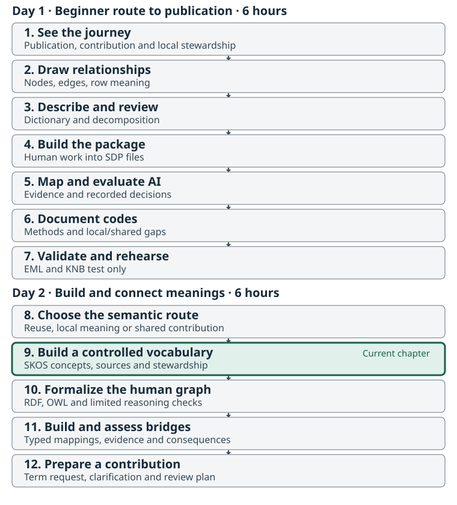
Build from source meanings, not labels alone
Chapter 8 selected a local/profile teaching draft for a small set of
estimate-method categories. Continue with your human dictionary and the
same 173-row, 14-column source. The four values below all occur in
ESTIMATE_METHOD; they are a selection from its nine
values, not a complete NuSEDS method vocabulary.
| Exact stored value | Source evidence available | What remains open |
|---|---|---|
Area Under the Curve |
Abundance over time is integrated and divided by survey life to estimate annual abundance | Which observations, survey-life assumption and coverage apply to a particular record? |
Combined Methods |
A final estimate combines two or more estimate methods after estimates are calculated from multiple survey methods | Which methods and combination rule apply? |
Fixed Site Census |
Raw observations are combined into one estimate; the source gives daily fence observations combined into an annual estimate as an example | What site, period and combination rule apply? |
Resistivity Counter |
The code exists, but its official dictionary entry is
N/A
|
Which counter observations and estimation procedure generated the result? |
These are paraphrases of the kit’s
raw_data/official-nuseds-dictionary.csv, retrieved on
8 September 2026. Its wording may postdate the 2025
source workbook. Consult the preserved file and code
evidence table, including their questions and retrieval caveat. A
broader method reference may help later, but its existence does not
prove that a particular procedure produced these records.
Give each concept a record
Open vocabulary-concepts.csv.
It supplies the exact source values, teaching IRIs and source
references; write the definition, definition status, scope and remaining
question. The source key is the pair source_column +
code_value. The IRI identifies your local concept, while
the preferred label is its human-readable name.
| Record field | What to establish |
|---|---|
concept_iri, scheme_iri
|
Which concept is described and which scheme includes it |
source_column, code_value
|
The exact source binding; never silently recode the CSV |
pref_label, language
|
The label used in this scheme and its language |
definition, definition_status
|
A sourced description, or an explicitly recorded absence |
scope_note, open_question
|
Limits of applicability and evidence still needed |
source_reference, source date and caveat |
Where the wording came from and its temporal limits |
broader_iri, alternative_label
|
Relationships or synonyms only when evidence supports them |
steward, status
|
The actual responsible person if agreed, and the real review state |
For Resistivity Counter, leave the operational
definition empty and explain why in definition_status and
open_question. Do not use the word N/A as
though it defined the procedure. A known source category can be
documented as an incomplete draft while its meaning remains
unresolved.
Combined Methods is not automatically a broader concept
than every method that might be combined. The source also does not
establish that Fence is a synonym of
Fixed Site Census. Leave these relationships absent unless
supported. The worked vocabulary therefore has no invented hierarchy or
alternative labels.
Read and write a small SKOS file
The W3C SKOS
Primer describes concepts with identifiers, labels, documentation
and scheme membership. Turtle is a text syntax for recording RDF
statements. In the example below, a states a type,
semicolons continue statements about the same subject, and a period ends
them. @en identifies English text.
@prefix ex: <https://example.org/fraser-coho-workshop/terms/> .
@prefix skos: <http://www.w3.org/2004/02/skos/core#> .
ex:estimate-method-scheme a skos:ConceptScheme ;
skos:prefLabel "Fraser Coho workshop estimate-method selection"@en .
ex:combined-methods a skos:Concept ;
skos:inScheme ex:estimate-method-scheme ;
skos:prefLabel "Combined Methods"@en ;
skos:definition "An estimate method in which separate estimates are calculated from multiple survey methods and the final estimate combines two or more estimate methods."@en .This short excerpt illustrates the structure. The supplied estimate-methods.ttl additionally records source links, scope, questions and draft status. Read those statements as part of each concept; they are not optional background to the definition.
Create output/semantic-lab/ and save your own edited
file there as estimate-methods.ttl. Keep the reference
unchanged. Use its prefix and scheme declarations, then build the four
concept blocks from your completed worksheet. Each supported definition
becomes skos:definition; scope belongs in
skos:scopeNote, the outstanding question and draft state in
skos:editorialNote, and the source in
dcterms:source. Omit a skos:definition
statement for the unresolved counter method rather than copying a guess
into it.
All new subject IRIs are in
https://example.org/fraser-coho-workshop/terms/. This is a
teaching namespace, not an official NuSEDS or SDO vocabulary. The source
links identify evidence; they do not let us add labels or redefine terms
in another organization’s namespace. The complete source and convention
pins are in provenance.json.
Check the artifact and its limits
A syntax check determines whether Turtle can be read. A vocabulary check examines selected expectations such as concept types, labels and scheme membership. Neither supplies scientific approval.
After preparing the Day 2 Python environment in Setup, run the same small utility from any software lane. Start in the extracted workshop-kit root:
It checks your copied Turtle against
semantic-lab/worksheets/vocabulary-concepts.csv and the
unchanged source, after checking the existing Day 1 human-preparation
record. It reads local files without fetching vocabulary URLs or
imports. A collaborator can run it for a spreadsheet participant.
Chapter 10 checks the formal model separately, and Chapter 12 assembles
the review handoff.
Use this human checklist alongside that bounded check:
- One resource is the scheme; four distinct resources are concepts in it.
- The four preferred labels match the exact source values and have
language
en. - There is one preferred label per language on each concept, and no identical literal used as both preferred and alternative label.
- Three concepts have source-backed definitions; the counter concept explicitly records its missing operational definition.
- Every concept retains evidence, scope and a pending-review note; no concept IRI is also declared an OWL class.
- No hierarchy or cross-vocabulary equivalence was invented to make the file look complete.
The label and scheme distinctions follow the SKOS Reference. Our exact four-concept inventory is a workshop check. SKOS scheme membership alone does not impose a closed list of permitted values on the source column; the dataset’s schema and code inventory do that job.
Steward the meaning as well as the file
Complete semantic-lab/worksheets/stewardship.md. A
production resource needs decisions about its owner, users, identifier
policy, evidence review, versioning, corrections and release. Today you
prepare those decisions; filling a form does not appoint an agency
steward.
In the draft, distinguish a wording correction from a changed meaning. Record the former in a change log; a substantive change may need a new concept and an explicit replacement decision so old data can still be interpreted. Preserve versions and review evidence. Before publication, the responsible steward must decide the production namespace, adoption scope, hosting and maintenance. These example.org IRIs remain teaching identifiers.
The pinned SDO conventions keep estimate-method schemes in the profile layer and require distinct IRIs for SKOS concepts and OWL classes. Chapter 10 creates the formal model; Chapter 11 reviews bridges without collapsing local definitions into shared ones.
Activity: create a vocabulary and its stewardship record
- Write for 15 minutes. Complete all four concept records against the source. Keep one definition explicitly unresolved. Do not add invented synonyms, parent concepts or approved stewards.
- Build for 15 minutes. Create your own Turtle file from those records. Work in pairs if a text editor is unfamiliar. Trace each statement back to a worksheet cell or cited source.
- Review for 10 minutes. Exchange the worksheet and Turtle file. Use the checklist above to find missing source links, changed source values, unsupported hierarchy or lost questions. Record only the review that actually occurred.
- Plan for 5 minutes. Complete the stewardship form’s proposed roles, release conditions and one change scenario. Keep names or decisions blank where no agreement exists.
Compare concepts-working.csv
and estimate-methods.ttl
with your output. They are source-grounded teaching drafts with no
scientific approval. The stewardship working example in
semantic-lab/vocabulary/stewardship-working.md deliberately
leaves reviewer names and agency decisions unset.
Success means another person can recover all four exact source bindings, distinguish three supported paraphrases from one definition gap, and identify what must happen before adoption. A parsed file with an invented procedure definition fails that test. A draft with the gap clearly documented can pass the classroom exercise while remaining unsuitable for an approved vocabulary release.
- A vocabulary connects concept identity, source meaning, evidence and stewardship.
- Preserve exact code values separately from the concepts that explain them.
- Missing definitions and unsupported relationships remain visible.
- SKOS scheme membership does not replace a data schema’s allowed-value checks.
- A technical pass, peer review and authorization to publish are distinct outcomes.
Content from Turn the Human Graph into a Small OWL Model
Last updated on 2026-09-09 | Edit this page
Overview
Questions
- Which parts of our human diagram are classes, relationships, individual objects, or literal values?
- What new information follows from an OWL statement?
- How can a graph pass a reasoning check and still lack required information?
Objectives
- Translate a small part of the reviewed Fraser Coho diagram into local OWL classes and properties.
- Trace individual objects and literal values to actual records in the unchanged source.
- Predict and inspect subclass, domain, and range inferences.
- Contrast open-world reasoning, SHACL conformance, and scientific review.
- Keep source records, result values, population references, and method concepts distinct.
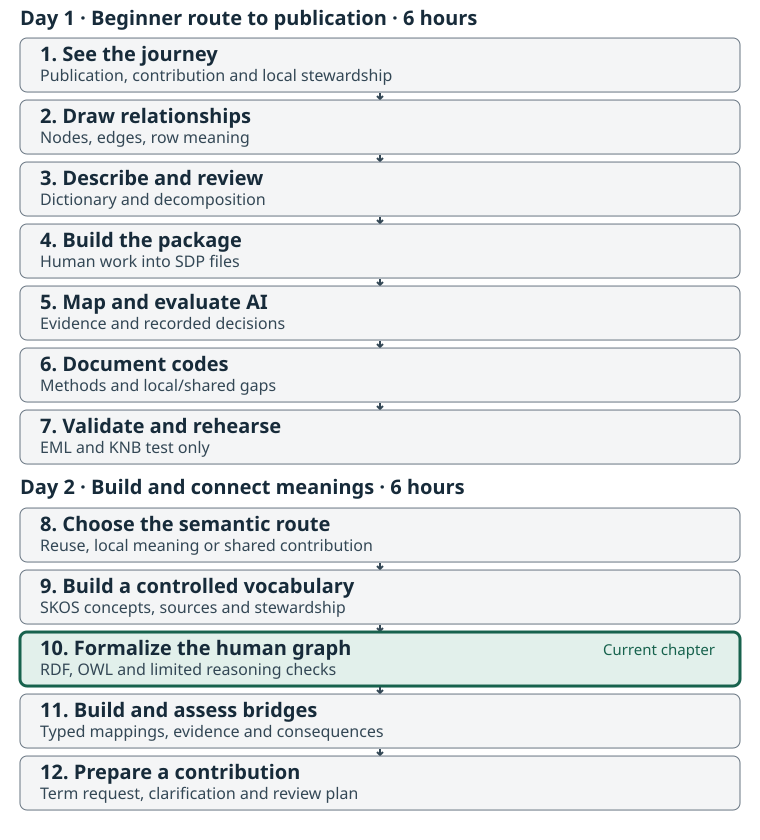
Start with a question the model should answer
We have already described the data and built a small vocabulary. Now we want another system to recognize relationships that a person can see in the diagram. For example: if a NuSEDS record has a reported result, what kind of object is that result? A second question is just as useful: does a missing result tell us that zero fish were reported?
Return to your actual Chapter 2 diagram, Chapter 3 dictionary and
decomposition, and named, dated peer review. Complete those before
running the graph tools. Compare the proposed statements in
semantic-lab/worksheets/model-statements.csv with your own
diagram. The supplied N1–N11 references point to the facilitator’s
working diagram; substitute your own node identifiers when they differ.
Record a decision, reason, and remaining question for each statement you
examine.
The model in this chapter is deliberately about what the source records. We do not know the identities of the field visits behind every estimate, the exact population boundaries, or every calculation used. A diagram can show those questions before a formal ontology has enough evidence to assert the answers.
Read two real records carefully
Open the full raw_data/nuseds-fraser-coho-2023-2024.csv.
Count data rows from one, excluding the header:
| Data row | Source population | Analysis year | Adult-spawner cell | Method label |
|---|---|---|---|---|
| 1 |
46200, Bonaparte River (Lillooet) Coho |
2023 | 758 | Resistivity Counter |
| 2 |
44965, Clapperton Creek (Lillooet) Coho |
2023 | blank | Not Applicable |
These are two illustrations within the same 173-row,
14-column table.
semantic-lab/model/source-trace.json retains their complete
source values and the CSV checksum. A row position locates a record only
in that exact file version; it is not a permanent NuSEDS identifier.
POP_ID plus ANALYSIS_YR is still not a
demonstrated unique key for the full file.
Row 1 gives us a record, a reported numeric result, a population
reference, and a year. The official dictionary describes the
adult-spawner field as mature salmon excluding jacks. It does not
establish natural-origin scope. The method label tells us which category
was stored; the current dictionary’s N/A entry for
Resistivity Counter leaves its operational definition unresolved. Row 2
supplies no numeric estimate. Preserve both limits.
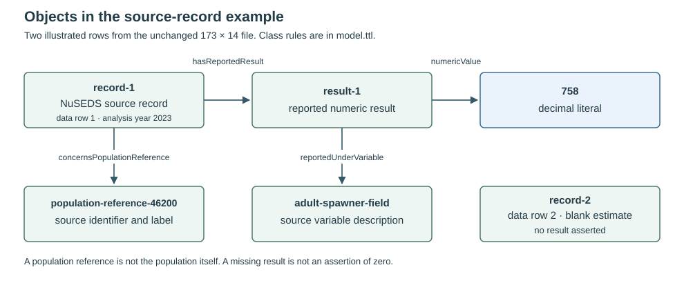
The editable diagram is
semantic-lab/model/record-model.mmd. The model and instance
files make the distinction between the kinds of objects and the
particular objects explicit.
Decide what each box and arrow represents
An OWL class describes a kind of
thing. An individual is a particular thing. An
object property connects individuals, while a
datatype property connects an individual to a literal,
such as the number 758. An IRI names a resource; a label
helps a person read it. These are separate roles. OWL
basic modelling.
| Part of the human explanation | Representation in this exercise | Question that remains |
|---|---|---|
| A kind of source record | Class NuSEDSEstimateRecord
|
Which source record identifiers would support a durable identity? |
| This particular first record | Individual record-1
|
Does a later source version retain the same record? |
| Its reported estimate | Individual result-1, with decimal literal
758
|
Which procedure and assumptions produced this value? |
| Its population identifier and label | Individual population-reference-46200
|
What biological or operational population does the reference identify? |
| The adult-spawner field description | Individual adult-spawner-field
|
Which reviewed variable, entity, property, and unit links apply? |
| “Has reported result” | Object property hasReportedResult
|
Are we connecting the record to its datum rather than to an activity? |
| The recorded analysis year | Datatype property with a gYear literal |
What biological year basis would a later analysis require? |
| The estimate-method category | The Chapter 9 SKOS concept, when supported | Is a category enough, or do we need a detailed protocol? |
The Salmon Domain Ontology metamodel helps distinguish entity, characteristic, variable, method, activity, and result. It is an optional teaching view, separate from the shared core. Use it to ask sharper questions; do not mechanically turn every box into an OWL class.
Pay particular attention to the word property. The
measured characteristic, such as abundance, is a role in the
human/I-ADOPT decomposition. An OWL object property, such as
hasReportedResult, is a relationship predicate. The
reusable smn:Abundance anchor is an OWL class in the pinned
SDO source. It is not interchangeable with an arrow merely because both
discussions use the word “property.”
Read the small model before running it
Open semantic-lab/model/model.ttl. The prefix
ex: expands to the teaching namespace
https://example.org/fraser-coho-workshop/terms/. These
local IRIs are classroom names, not identifiers minted by DFO or the
Salmon Domain Ontology. Particular objects use the separate
/instances/ namespace.
ex:SourceRecord a owl:Class .
ex:NuSEDSEstimateRecord a owl:Class ;
rdfs:subClassOf ex:SourceRecord .
ex:hasReportedResult a owl:ObjectProperty ;
rdfs:domain ex:NuSEDSEstimateRecord ;
rdfs:range ex:RecordedNumericResult .Read the subclass statement as “every NuSEDS estimate record is a source record.” It does not say that every source record is a NuSEDS estimate record. Subclass is not equivalence. A source record from another kind of table can belong to the broader class without belonging to the narrower one. RDF Schema subclass semantics.
Now open semantic-lab/model/instances.ttl:
row:record-1 a ex:NuSEDSEstimateRecord ;
ex:hasReportedResult row:result-1 .
row:result-1 ex:numericValue "758"^^xsd:decimal .The complete file also retains the source row locator, population reference, year, and field description. Decimal values allow for fractional estimates elsewhere in this source; do not impose whole-fish integers on every estimate. The result’s type is intentionally not written next to it: the range rule lets us infer it. Before running anything, predict these three outcomes:
-
record-1will also be aSourceRecordthrough the subclass rule. -
result-1will be aRecordedNumericResultthrough the range rule. - If we remove the explicit record type from a scratch graph but keep
hasReportedResult, the domain rule will infer the record type again.
Domain and range describe the types inferred from a property’s use. They are not dropdown restrictions that stop an inappropriate edge from being entered. Multiple domains normally imply membership in every stated domain; they do not mean “choose any one.” RDF Schema domain and range.
Compare reasoning with required information
Suppose someone mistakenly connects
population-reference-46200 directly to
result-1 using hasReportedResult. The domain
rule now classifies that reference as a NuSEDS estimate record too.
Without additional incompatible axioms, the type inference itself does
not reject the mistaken edge. We need a source interpretation and an
appropriate checking rule to recognize the error.
OWL uses an open-world approach: information missing from the graph may simply be unknown. The absence of a result triple for row 2 does not assert zero, prove that no estimate could exist elsewhere, or provide a reason for the blank. Likewise, an OWL model is not a requirement that a document explicitly contain a year value. OWL’s information and schema distinction.
semantic-lab/model/record-shapes.ttl adds separate
classroom conformance requirements using SHACL:
ex:RecordShape a sh:NodeShape ;
sh:targetClass ex:NuSEDSEstimateRecord ;
sh:property [
sh:path ex:analysisYear ;
sh:minCount 1 ;
sh:maxCount 1 ;
sh:datatype xsd:gYear
] .This SHACL shape requires one year value on each targeted record. The full supplied shape permits a missing numeric result because blanks occur in the source. It is a local exercise contract, not the complete NuSEDS or SDP schema. The checker applies RDFS inference for its SHACL run and reports that choice. SHACL validation and shapes.
| Check | What it answers here |
|---|---|
| Turtle parsing | Can the software read the graph’s syntax? |
| Selected OWL/RDFS rule inferences | Which additional triples follow through the tested rules? |
| SHACL | Does this data graph meet the supplied shape requirements? |
| Source-trace regression check | Do the illustrated objects still match the pinned CSV records? |
| Human review | Does the model represent the intended scientific and operational meaning? |
Passing one row does not answer all five questions.
Run the offline checks
Use the semantic-lab environment from Setup.
Its requirements file pins rdflib==7.1.4,
owlrl==7.1.4, and pyshacl==0.30.1. From the
workshop project root, with that Python environment active:
This utility works alongside either the R or Python SDP lane. It is a Python graph tool, not a new MetaSalmon function. Spreadsheet participants can make the statement table and predictions, then inspect a partner’s or facilitator’s actual run. Record whether you executed or inspected the result.
The learner command checks the Chapter 2–3 preparation record before loading the model. It reads local Turtle files, resolves no ontology imports, makes no API calls, preserves the source, and refuses to overwrite a report. Use a new report name on the next run.
The supplied example reports 15 named checks, including deliberately broken in-memory cases. Removing a required year must fail SHACL; adding the mistaken edge must infer the extra type; a deliberate class/SKOS-concept IRI collision must be rejected by the targeted workshop policy check. A passing report means those expected contrasts occurred. It does not mean the deliberately broken graph was accepted as correct.
The inference library implements rule-based OWL RL reasoning. This exercise is not a full OWL DL consistency or completeness assessment of the Salmon Domain Ontology and its imports. In particular, “not present in this selected closure” is a bounded observation, not a general proof that a statement cannot follow under some larger ontology. OWL profiles, OWL-RL implementation.
Activity: formalize, predict, and challenge
Work in pairs for 55 minutes:
-
Read and decide, 15 minutes. Compare at least four
proposed model statements with your human diagram and dictionary.
Include the record/result distinction and the blank estimate. Fill your
decision, reason, and reviewer fields in
semantic-lab/worksheets/model-statements.csv. -
Make a local model copy, 15 minutes. Create
output/semantic-lab/if needed. Copymodel.ttltooutput/semantic-lab/model.ttlandinstances.ttltooutput/semantic-lab/instances.ttl, without overwriting an earlier copy. Improve one local class description so another pair can distinguish its instances from nearby objects. Keep source values and the shared namespace unchanged. -
Predict before running, 10 minutes. Write the
expected subclass, domain, and range results. Run the checker against
the copies with
--model output/semantic-lab/model.ttl --instances output/semantic-lab/instances.ttl, choosing a new report filename. Explain any difference from your prediction. - Challenge the interpretation, 15 minutes. Read the two in-memory mutation tests in the report. Explain why the missing year is a conformance failure and why the mistaken edge produces an inference. Propose one additional test for a question in your own graph, including a counterexample. Mark any unimplemented proposal clearly.
Your output is an edited local model, a source trace, explicit predictions, and a reviewed statement table. Keep the uncertain survey, population, origin, and unit questions visible. Chapter 11 adds bridges only after comparing the types and definitions on both sides.
- Formal statements begin with reviewed human meanings and questions.
- Classes, individual objects, relationship predicates, and literal values play different roles.
- Subclass, domain, and range can add type information; they do not replace conformance checks.
- A blank source cell does not become zero or an OWL negation.
- Parsing, selected inference, SHACL, source fidelity, and scientific review establish different things.
Content from Build and Test Bridges to Shared Salmon Meanings
Last updated on 2026-09-09 | Edit this page
Overview
Questions
- When should a local term reuse a shared identifier, remain local, or become a proposed shared contribution?
- What does each mapping predicate actually claim, and in which direction?
- How can we test a bridge without erasing source meaning or pretending it has been approved?
Objectives
- Keep local vocabulary, local OWL model, shared anchors, and bridge assertions in separate files.
- Select mapping predicates by the types and meanings of both endpoints.
- Record evidence, direction, counterexamples, and a human decision for each proposal.
- Test a SKOS mapping and an OWL subclass bridge against real source context.
- Distinguish a mapping’s meaning from its serialization or review status.
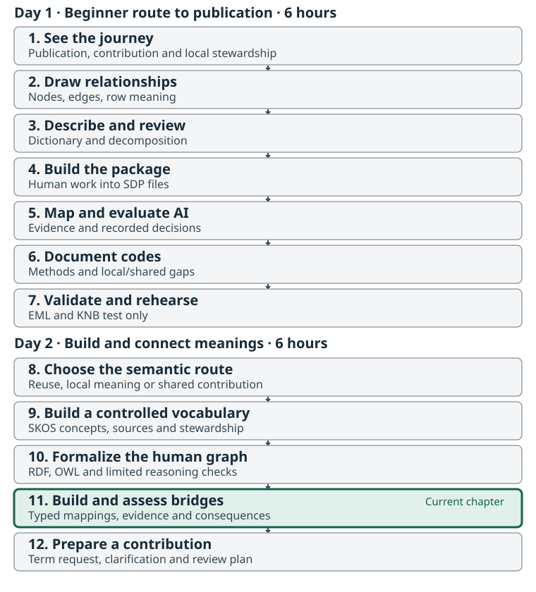
Preserve local meaning while making it discoverable
A collaborator wants to find salmon enumeration information across
programs. Our source uses Area Under the Curve,
Combined Methods, Fixed Site Census, and other
NuSEDS categories. The shared Salmon Domain Ontology contains reusable
terms, but a shared label need not capture every local distinction.
A bridge is a set of explicit relationships between those meanings. It can support discovery or integration while the source retains its own labels, definitions, and authority. The first question is not “which shared IRI looks closest?” It is “what claim can these two definitions support?”
Complete the human graph, dictionary, and peer review before this exercise. Use your Chapter 9 vocabulary and Chapter 10 statement decisions. If you disagree with a supplied definition, record that disagreement before comparing mappings. A formatted mapping cannot repair an unsupported local meaning.
Keep four pieces separate
| Artifact | What it owns in this lab |
|---|---|
semantic-lab/vocabulary/estimate-methods.ttl |
Local SKOS concepts for four actual method labels. |
semantic-lab/model/model.ttl and
instances.ttl
|
Local OWL classes, relationships, and the illustrated source objects. |
semantic-lab/bridge/shared-anchors.ttl |
A small, attributed excerpt of existing SDO definitions and types. |
semantic-lab/bridge/bridge.ttl |
Two explicit draft relationships between local and shared meanings. |
The bridge does not rename source codes, move local definitions into
the shared namespace, or edit the shared ontology. The
example.org terms remain teaching identifiers.
shared-anchor-sources.json identifies SDO commit
d45f8f7cc857d92af8bbe54a7c89b2a4a14784b2, the source
modules, and their checksums. The excerpt contains outgoing triples for
six selected subjects; it is not the full ontology or its import
closure.
This arrangement follows the SDO conventions: retain local or program meanings when shared reuse is uncertain, document bridge provenance, and promote shared terms through stewardship. The modules and bridges guide provides the broader workflow. Check a target’s current definition and type before applying an example pattern from any guide.
Read the endpoint types before choosing a predicate
The selected source declarations include:
| Shared IRI | Declared representation | Consequence for this exercise |
|---|---|---|
smn:EnumerationMethod |
skos:Concept and sosa:Procedure
|
It can be compared with a local method concept; it is not an OWL class. |
smn:MethodDocumentation |
owl:Class |
It can be compared with a class of local documentation items. |
smn:EscapementEstimate |
owl:Class |
Its definition describes a datum tied to a stock and survey event, not a source table row. |
smn:Population |
owl:Class |
It describes a biological grouping, not the information object
holding POP_ID. |
A SKOS concept can also be an instance of a class such as
sosa:Procedure. That does not make the concept itself an
OWL class. The SDO dual-representation policy uses separate IRIs when
class and concept representations are both needed. The lab includes an
explicit collision check because legal OWL punning alone does not
enforce this editorial policy.
Keep these predicate families distinct:
| Statement | What it claims | What it does not claim |
|---|---|---|
localClass rdfs:subClassOf sharedClass |
Every local-class instance is a shared-class instance. | The reverse inclusion. |
localClass owl:equivalentClass sharedClass |
The classes have the same members. | That similar labels are sufficient evidence. |
individualA owl:sameAs individualB |
The names identify the same individual. | Merely related records, matching labels, or matching numeric identifiers from different systems. |
localConcept skos:exactMatch sharedConcept |
Strong interchangeability across a wide range of information-retrieval applications. | OWL individual identity or class equivalence. |
localConcept skos:closeMatch sharedConcept |
Sufficient similarity for some information-retrieval applications. | Universal interchangeability. |
localConcept skos:broadMatch sharedConcept |
The shared concept is broader than the local concept. | That the same predicate holds in reverse. |
localConcept skos:relatedMatch sharedConcept |
An associative relationship between the concepts. | A hierarchy or permission to replace one with the other. |
OWL class equivalence concerns class membership;
owl:sameAs concerns individuals. OWL semantics.
SKOS exact/close mappings have information-retrieval meanings; they do
not entail those OWL equivalences. broadMatch reverses to
narrowMatch, while relatedMatch,
closeMatch, and exactMatch are symmetric. SKOS mapping
properties.
Choosing a weaker predicate is not a substitute for evidence. If you
cannot explain why two concepts are related, defer the mapping.
Similarly, closeMatch means scoped retrieval similarity; it
is not a generic spelling for “we are unsure.”
Work through an actual method example
Find data row 5 in the unchanged source: Gates River
(Lillooet) Coho, POP_ID 47213, analysis year
2023, reported value 3032, method
Area Under the Curve, classification
RELATIVE ABUNDANCE (TYPE-3).
The official dictionary describes AUC as combining abundance point
estimates using the area under an abundance-time curve and a survey-life
assumption. The shared EnumerationMethod definition
concerns enumerating or counting salmon in the field. These descriptions
support a relationship worth reviewing, but they do not establish
interchangeable procedures or comparable numerical results.
The supplied draft proposes:
ex:area-under-the-curve skos:relatedMatch smn:EnumerationMethod .Its counterexample is concrete: an annual estimate calculated from a
time series and survey-life assumption is not simply a direct field
count. Replacing Area Under the Curve with
Enumeration method would remove information a reader needs
to interpret row 5. A discovery interface may show this record under a
reviewed “related methods” expansion while still displaying the original
method and classification. That discovery use does not authorize
aggregating its value with other estimates.
Compare data row 39, Dunn Creek (Clearwater) Coho,
which stores Fixed Site Census. The official source
describes combining raw observations into an estimate. The label alone
might make you imagine a single direct field census. Use that tension to
test your proposed category boundaries, not to infer undocumented
equivalence between the two local methods.
mapping-decisions-working.csv records six proposals and
alternatives. B01 is the draft related link above; B02 rejects an exact
link between the same endpoints. B05 defers a Resistivity Counter
mapping because the current dictionary lacks an operational definition.
A rejected or deferred row stays in the decision record without becoming
a mapping triple.
Work through a class bridge without inventing biology
Chapter 10 includes a documentation item,
method-description-auc, representing the captured NuSEDS
explanation of the AUC method. It is an instance of local class
NuSEDSMethodDescription. This is distinct from the method
concept and from an actual execution of that method.
The local class is scoped to documentation that explains how a NuSEDS
estimate method works. The shared MethodDocumentation class
covers documented method descriptions linked to the production of a
salmon metric or estimate. The second draft bridge therefore
proposes:
ex:NuSEDSMethodDescription rdfs:subClassOf smn:MethodDocumentation .With this bridge loaded, the local documentation item receives the
shared documentation type. That is useful for a query seeking method
documentation across programs. It does not make every shared method
document a NuSEDS document. Documentation from another program provides
a possible counterexample to the reverse inclusion. The supplied model
does not assert owl:equivalentClass.
By contrast, B03 rejects equating the local source-record class with
smn:EscapementEstimate: the record and datum are different
objects, and some records have no numeric result. B04 rejects making a
population reference a subclass of biological
smn:Population. Both mistakes can look plausible in a table
of labels. Reading the endpoint definitions exposes the category
mismatch.
Make the decision record carry the reasoning
Use semantic-lab/worksheets/bridge-decisions.csv. It
starts with candidate statements and source questions; human decision,
reason, reviewer, and date fields are blank. For each mapping you
review, record:
- The exact subject, predicate, and object, including direction.
- The meaning and representation type of both endpoints.
- The source definition and an actual record showing the local use.
- A counterexample, boundary case, or unresolved question.
- Your disposition, intended use, reason, reviewer, and date.
Keep local definitions and source labels intact. Retain one proposed predicate per pair in the assertion file; keep rejected alternatives in the table. If a future review strengthens a mapping, record the change and recheck its consequences rather than leaving contradictory alternatives active together.
A draft annotation does not switch off a triple.
Loading bridge.ttl asserts its two mapping statements. Its
review annotations tell a person how to treat the file; a reasoner still
uses the logical assertions. The workshop therefore loads it only into
the isolated exercise. Passing the check does not approve its use in
production integration.
SSSOM is a format for sharing mappings and their metadata. It carries a mapping predicate; it does not choose the predicate’s semantics or make an uncertain relationship exact. A CSV with two identifier columns is not automatically valid SSSOM. The lab’s decision table is a workshop worksheet; no SSSOM-conformance claim is made. If you later export it, preserve the predicate, provenance, and review decision and validate against the chosen SSSOM version. SSSOM documentation.
Test the bridge, then inspect what the test leaves open
With the semantic-lab environment active, run from the workshop project root:
The script requires the completed human preparation record. It loads the local model, instances, vocabulary, shared-anchor excerpt, draft bridge, and a small excerpt of the W3C SKOS rules. It reads no remote ontology and makes no API call. The limited SKOS rule file is named in the report; importing a namespace name alone would not supply its inference rules.
The expected report contains ten named checks. Inspect at least these:
- The AUC example still matches actual row 5.
- The related mapping yields the reverse related mapping, but no identity between the two concepts.
- The local documentation item gains
smn:MethodDocumentationtype. - The reverse subclass and class equivalence are absent from the selected closure.
- A counterfactual in-memory
broadMatchproduces an inversenarrowMatch, not a reversebroadMatch. This demonstrates direction without promoting the unsupported stronger mapping into the saved bridge. - Adding an exact mapping alongside the related mapping fails the lab’s per-pair policy.
The supplied checks test these particular examples and their stated expectations. They do not prove that every possible bridge is sound, run a full OWL DL classifier, or establish scientific agreement. If an edited proposal changes an expected outcome, a failing check is a prompt to inspect the new claim and revise its documented test deliberately. Do not delete a check merely to obtain a pass.
Decide whether to reuse, keep local, or request a shared term
| Finding after review | Next action |
|---|---|
| A shared term already captures the intended meaning and type | Reuse it directly where the application supports that role. |
| A useful local distinction needs to survive | Keep the local identifier and definition; propose a bridge with evidence and a stated use. |
| A policy-neutral concept has credible use across organizations | Prepare a shared-term request, including the local examples and reuse case. |
| The meaning or source authority remains unclear | Ask for clarification and defer the assertion. |
Building a governed vocabulary also requires named stewards, a review process, versioning, stable publication, and maintenance. A successful reasoner run does not create those arrangements. Chapter 12 turns a justified unresolved need into a reviewable request rather than automatically minting a shared identifier.
Activity: defend one bridge and one withheld mapping
Work in pairs for 45 minutes:
- Compare endpoints, 10 minutes. Choose B01 or B06. Read both definitions and types in the local files; trace the source context. Explain why the proposed predicate is a SKOS relationship or an OWL class relationship.
- Record your decision, 10 minutes. Complete the human fields for that proposal and one rejected or deferred alternative. Include a counterexample and the intended use. You may disagree with the supplied draft; record the specific change required.
-
Test a separate copy, 10 minutes. Copy
semantic-lab/bridge/bridge.ttlto a newoutput/semantic-lab/bridge.ttl. Runpython semantic-lab/scripts/check_bridge.py --bridge output/semantic-lab/bridge.ttl --report output/semantic-lab/bridge-check-02.json, choosing an unused report name. Inspect the reverse mapping, subclass inference, and counterfactual direction checks. Preserve the reference files. - Peer challenge and handoff, 15 minutes. Ask another pair what information would be lost by canonicalizing the source through your bridge. Revise your rationale or defer the mapping. Prepare either a local stewardship action or the evidence needed for a shared-term request.
Your output is a small bridge file, a completed decision table, and a test report whose scope you can explain. The full source table and original method labels remain intact.
- Local meanings, shared anchors, and bridge assertions have separate responsibilities.
- Predicate direction and endpoint type are part of the mapping claim.
- SKOS similarity is different from OWL class equivalence or individual identity.
- Counterexamples help distinguish a useful bridge from a destructive replacement.
- Draft statements still have effects when loaded; a test result and a stewardship decision remain separate.
Content from Draft a Term Request and Follow Its Stewardship
Last updated on 2026-09-09 | Edit this page
Overview
Questions
- When is a source clarification more useful than a new term?
- Who can decide a term’s meaning, representation, and publication?
- How does a draft request become a reviewed, released term that a dataset can reuse?
Objectives
- Turn one unresolved Fraser Coho interpretation into a specific, source-backed request.
- Distinguish local vocabulary work, shared-term proposals, and mapping review.
- Inspect a software-generated request without treating it as evidence that a term is absent.
- Record the next steward, required evidence, and release/reuse checks without posting an issue.
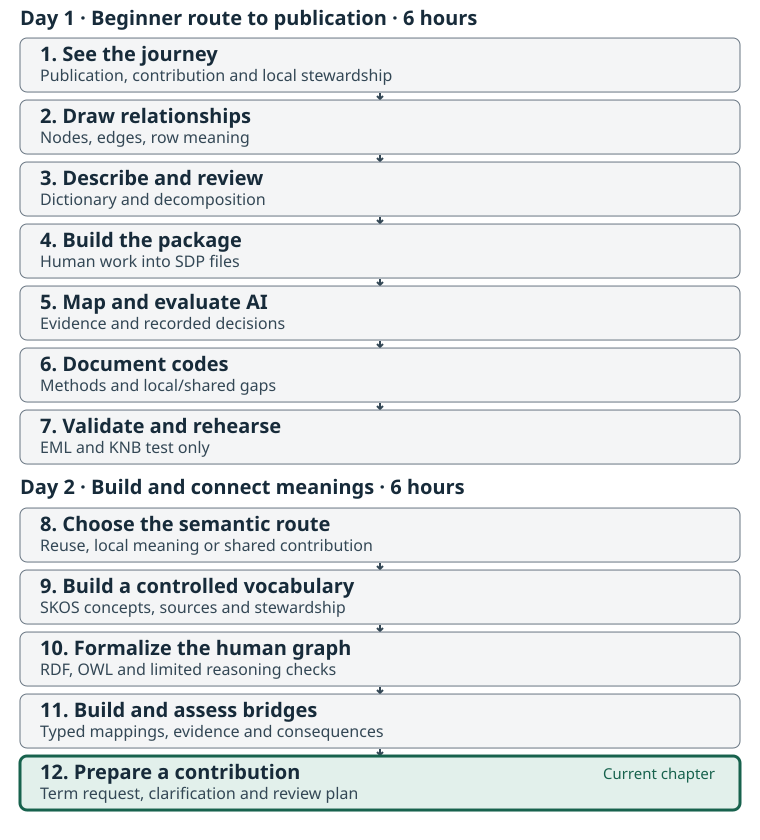
The problem: an unresolved label needs a useful next action
Continue with the unchanged 173-row, 14-column NuSEDS Fraser
Coho 2023–2024 source, dataset ID
fraser-coho-workshop, table ID escapement.
Bring your actual Chapter 2 graph, Chapter 3 dictionary and peer review,
and the decisions from the Day 2 mapping and local-model exercises. A
supplied reference answer cannot replace your human checkpoint.
You now have more choices than accepting the nearest label. You can reuse an existing term, clarify a source definition, improve an existing vocabulary entry, keep a local concept, propose a mapping, or request a new shared term. Success in this chapter is a reviewable draft and a defensible next step. It does not require a new term or a submitted issue.
Use the request worksheet in the kit. Read the filled source-clarification example after choosing your own unresolved question. These are working documents, not approval records.
Choose the request before choosing a repository
| What the evidence shows | Suitable request or outcome |
|---|---|
| A documented shared term already fits | Reuse it; retain the version and mapping rationale. |
| A source label is insufficiently defined | Ask for the source meaning or procedure documentation. |
| An existing term needs wording or scope clarification | Propose a definition update, with its current IRI and compatibility concern. |
| A concept serves one project or program | Keep a local draft vocabulary or model and its maintenance responsibility explicit. |
| A supported meaning needs a cross-vocabulary connection | Propose a mapping with predicate, evidence, and unresolved scope differences. |
| A search and source review identify a reusable missing concept | Draft a new-term request, including the search boundary and expected reuse. |
Ownership and representation are separate choices.
SKOS organizes concepts and code lists;
OWL expresses formal classes and properties. Either can
be maintained locally. Shared smn: terms require stable
cross-organization meaning; gcdfo: holds DFO-specific or
intentionally profile-scoped meaning. A DFO source document alone does
not decide where a concept belongs. A bridge connects meanings but does
not transfer their ownership.
Do not create a compound shared class merely because a source column
has a long name. Keep the variable’s property, entity, unit,
constraints, statistical modifier, and method context distinguishable.
method_iri is not a column-dictionary slot in SDP v0.3; a
source method value belongs with its code context. The upstream request
form’s method prompt is context for discussion, not permission to add a
dictionary field.
Inspect existing definitions and record the search boundary
For ESTIMATE_METHOD = Resistivity Counter, the official
NuSEDS dictionary supplies N/A rather than an operational
definition. The existing DFO concept FixedSiteCensusElectronic
describes several counting technologies and additional procedure
context. Its legacy-label note is useful evidence to investigate, not
proof that these four source records meet the entire definition.
The filled example therefore asks for source clarification and mapping review. It does not claim that a new shared term is missing. Compare the raw label, the official dictionary, your graph’s method relationship, and the candidate’s complete definition. Preserve the distinction between an instrument label and a procedure, and between source evidence and proposed interpretation.
For your own draft, record which vocabularies and versions you inspected, the date, search strings, candidate IRIs, and why each candidate fits or does not fit. An empty search result means that search found nothing; it does not establish universal absence. A human rejection made after candidate retrieval may also be missing from the saved suggestion file.
Preview candidate requests without submitting them
The kit includes read-only input previews for R
0.5.0 and Python 0.4.0. They read the
supplied checkpoints/seeded-sdp/semantic_suggestions.csv,
call detect_semantic_term_gaps(), and render text with
render_ontology_term_request(). The scripts first check the
completed Day 1 preparation, then write only to a new preview folder.
They do not search the web, call AI, or post issues.
The supplied evidence produces two candidate rows in the checked
versions: the property and variable
roles for NATURAL_ADULT_SPAWNERS. Both generated titles say
“Request new shared SMN term: NATURAL_ADULT_SPAWNERS”. That title is not
a conclusion you should adopt. For example, smn:Abundance
already supplies a reusable characteristic to inspect, while the
complete source variable raises other scope questions. A renderer can
make a search limitation look like a confident new-term request; revise
the draft using your evidence.
The recorded preview is a software execution record. It is not a human-approved gap, an actual submission, or a substitute for reading source definitions. New evidence or software versions may change the candidate list; keep the actual output rather than forcing it to match the recording.
Write the request a steward can evaluate
The worksheet asks for the problem, source row/column context, current interpretation, search evidence, proposed action, and unresolved questions. It also distinguishes the desired vocabulary owner from the technical representation and any mapping predicate. Include a real peer’s feedback when it occurs; leave reviewer and approval fields pending until then.
For a shared proposal, use the current SMN request templates. For a DFO-specific question, follow DFO CONTRIBUTING, which also supports boundary questions and definition updates. Check the destination’s current guidance before submission; the local worksheet prepares the evidence but does not replace the repository’s form.
A useful request explains why a nearby term does not fit, not merely
that the preferred label was absent. Name the expected consequence of
the requested change: a clearer definition, a local code interpretation,
a reviewed mapping, or a new reusable concept. If a mapping is proposed,
state what evidence supports its strength.
owl:equivalentClass has logical consequences; neither a
high score nor approval to discuss it proves those consequences are
justified.
Follow the lifecycle without inventing its outcome
| Stage | Evidence to retain | Responsible decision |
|---|---|---|
| Capture | Source label, dataset context, uncertainty, and observed need | Contributor identifies the question. |
| Clarify and search | Definitions, source versions, candidate terms, and search limits | Source/domain reviewers clarify meaning. |
| Route and discuss | Proposed owner, representation, reuse case, and alternatives | Relevant stewards decide scope and destination. |
| Review a concrete change | Definition, mappings/axioms, compatibility effects, and technical checks | Domain and technical reviewers assess the proposal. |
| Accept, revise, defer, or decline | Actual decision with rationale and reviewer record | Maintainers follow their repository’s governance. |
| Release and document | Released IRI, version, change notes, and accessible definition | Maintainers publish through their normal process. |
| Reuse and maintain | Updated local mapping, package checks, and later change notices | Dataset maintainers verify the released meaning in context. |
This is a teaching checklist, not a replacement governance policy. Repository labels and decisions may differ. A merged change, a released term, a scientifically adequate definition, and a correct dataset mapping are separate claims. A declined or deferred request can still improve the local definition and preserve a useful explanation.
In this workshop the final handoff is a saved draft, with a proposed destination and next step. Posting to GitHub or contacting a steward is a separate action by an authorized person. No submission is required for completion.
Activity: hand over one reviewable request
Use 35 minutes:
- 5 minutes: choose a real unresolved question from your graph, dictionary, code review, or mapping exercise. Select clarification, update, local retention, mapping, or new-term request.
- 10 minutes: inspect relevant source definitions and existing candidates; fill the search-evidence table and state its limits.
-
10 minutes: complete
semantic-lab/worksheets/term-request.md, naming the proposed owner, representation, evidence, and requested action. - 5 minutes: exchange drafts with a peer. Ask whether the request distinguishes source fact from inference and whether a new term is actually warranted. Record the actual feedback.
- 5 minutes: revise and name one next step and its responsible role. Mark the draft unsubmitted and approval pending.
Finish with one saved request or source question, one recorded review decision or unresolved objection, and a next action another person can follow. A source-clarification request is as valid an outcome as a supported new-term proposal.
- Search results and generated request titles are evidence to review, not proof that a shared term is missing.
- Ownership, representation, mapping strength, and approval answer different questions.
- Useful contributions preserve source context, alternatives, uncertainty, and compatibility effects.
- Stewardship continues through decision, release, contextual reuse, and later revision.
- The workshop produces an unsubmitted draft and an honest next step.